Exercise 719： Let CHAG and BHAJ be parallelograms. EHAD is a trapezoid with HA//ED and HA=2ED. IHAB is a trapezoid with IH//BA and IH=2BA. E, D are the midpoints of FH, HC, respectively. FA⊥BG. Given that I, C, J are collinear and C, B, A are collinear, prove that IC\(\cdot\)CJ=2\(\cdot\)BA\(\cdot\)CB.
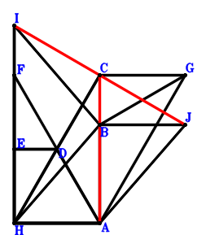
\(\because \) D is the midpoint of HC \(\therefore \small\overrightarrow{AD}=\dfrac{\small\overrightarrow{AC}}{2} + \dfrac{\small\overrightarrow{AH}}{2}\).\(\because \) HA//ED and HA=2ED \(\therefore \small\overrightarrow{AE}=\dfrac{\small\overrightarrow{AC}}{2} + \small\overrightarrow{AH}\).\(\because \) E is the midpoint of FH \(\therefore \small\overrightarrow{AF}=2 \small\overrightarrow{AE} - \small\overrightarrow{AH}=\small\overrightarrow{AC} + \small\overrightarrow{AH}\).\(\because \) CHAG is a parallelogram \(\therefore \small\overrightarrow{AG}=\small\overrightarrow{AC} - \small\overrightarrow{AH}\).\(\because \) IH//BA and IH=2BA \(\therefore \small\overrightarrow{AI}=2 \small\overrightarrow{AB} + \small\overrightarrow{AH}\).\(\because \) BHAJ is a parallelogram \(\therefore \small\overrightarrow{AJ}=\small\overrightarrow{AB} - \small\overrightarrow{AH}\).\(\because \) FA⊥BG \( \therefore\small\overrightarrow{AF} \cdot \small\overrightarrow{BG}=\small\overrightarrow{AF} \cdot \left(- \small\overrightarrow{AB} + \small\overrightarrow{AG}\right)=\left(\small\overrightarrow{AC} + \small\overrightarrow{AH}\right) \cdot \left(- \small\overrightarrow{AB} + \small\overrightarrow{AC} - \small\overrightarrow{AH}\right)=- \small\overrightarrow{AB} \cdot \small\overrightarrow{AC} - \small\overrightarrow{AB} \cdot \small\overrightarrow{AH} + \small\overrightarrow{AC}^{2} - \small\overrightarrow{AH}^{2}=0.\)In conclusion, \(2 \small\overrightarrow{AB} \cdot \small\overrightarrow{CB} + \small\overrightarrow{CI} \cdot \small\overrightarrow{JC}=2 \small\overrightarrow{AB} \cdot \left(\small\overrightarrow{AB} - \small\overrightarrow{AC}\right) + \left(- \small\overrightarrow{AC} + \small\overrightarrow{AI}\right) \cdot \left(\small\overrightarrow{AC} - \small\overrightarrow{AJ}\right)=2 \small\overrightarrow{AB} \cdot \left(\small\overrightarrow{AB} - \small\overrightarrow{AC}\right) + \left(- \small\overrightarrow{AB} + \small\overrightarrow{AC} + \small\overrightarrow{AH}\right) \cdot \left(2 \small\overrightarrow{AB} - \small\overrightarrow{AC} + \small\overrightarrow{AH}\right)=\small\overrightarrow{AB} \cdot \small\overrightarrow{AC} + \small\overrightarrow{AB} \cdot \small\overrightarrow{AH} - \small\overrightarrow{AC}^{2} + \small\overrightarrow{AH}^{2}=0\)\(\because\) I, C, J are collinear and C, B, A are collinear \(\therefore\) IC\(\cdot\)CJ=2\(\cdot\)BA\(\cdot\)CB.
Exercise 976： Let FBCE, BCDH and HCGA be parallelograms. JCAH is a trapezoid with CA//JH and CA=2JH. E, I are the midpoints of CH, HA, respectively. CB⊥BA and DA⊥AF. Prove that GB⊥JI.
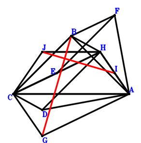
\(\because \) BCDH is a parallelogram \(\therefore \small\overrightarrow{AD}=- \small\overrightarrow{AB} + \small\overrightarrow{AC} + \small\overrightarrow{AH}\).\(\because \) E is the midpoint of CH \(\therefore \small\overrightarrow{AE}=\dfrac{\small\overrightarrow{AC}}{2} + \dfrac{\small\overrightarrow{AH}}{2}\).\(\because \) FBCE is a parallelogram \(\therefore \small\overrightarrow{AF}=\small\overrightarrow{AB} - \dfrac{\small\overrightarrow{AC}}{2} + \dfrac{\small\overrightarrow{AH}}{2}\).\(\because \) HCGA is a parallelogram \(\therefore \small\overrightarrow{AG}=\small\overrightarrow{AC} - \small\overrightarrow{AH}\).\(\because \) I is the midpoint of HA \(\therefore \small\overrightarrow{AI}=\dfrac{\small\overrightarrow{AH}}{2}\).\(\because \) CA//JH and CA=2JH \(\therefore \small\overrightarrow{AJ}=\dfrac{\small\overrightarrow{AC}}{2} + \small\overrightarrow{AH}\).\(\because \) DA⊥AF \(\therefore \small\overrightarrow{AD} \cdot \small\overrightarrow{AF}=\left(- \small\overrightarrow{AB} + \small\overrightarrow{AC} + \small\overrightarrow{AH}\right) \cdot \left(\small\overrightarrow{AB} - \dfrac{\small\overrightarrow{AC}}{2} + \dfrac{\small\overrightarrow{AH}}{2}\right)=- \small\overrightarrow{AB}^{2} + \dfrac{3 \small\overrightarrow{AB} \cdot \small\overrightarrow{AC}}{2} + \dfrac{\small\overrightarrow{AB} \cdot \small\overrightarrow{AH}}{2} - \dfrac{\small\overrightarrow{AC}^{2}}{2} + \dfrac{\small\overrightarrow{AH}^{2}}{2}=0\) . . . . . . \(①\)\(\because \) CB⊥BA \(\therefore \small\overrightarrow{AB} \cdot \small\overrightarrow{CB}=\small\overrightarrow{AB} \cdot \left(\small\overrightarrow{AB} - \small\overrightarrow{AC}\right)=\small\overrightarrow{AB}^{2} - \small\overrightarrow{AB} \cdot \small\overrightarrow{AC}=0\) . . . . . . \(②\)In conclusion, \(\small\overrightarrow{BG} \cdot \small\overrightarrow{IJ}=\left(- \small\overrightarrow{AB} + \small\overrightarrow{AG}\right) \cdot \left(- \small\overrightarrow{AI} + \small\overrightarrow{AJ}\right)=\left(\dfrac{\small\overrightarrow{AC}}{2} + \dfrac{\small\overrightarrow{AH}}{2}\right) \cdot \left(- \small\overrightarrow{AB} + \small\overrightarrow{AC} - \small\overrightarrow{AH}\right)=- \dfrac{\small\overrightarrow{AB} \cdot \small\overrightarrow{AC}}{2} - \dfrac{\small\overrightarrow{AB} \cdot \small\overrightarrow{AH}}{2} + \dfrac{\small\overrightarrow{AC}^{2}}{2} - \dfrac{\small\overrightarrow{AH}^{2}}{2}=-①-②=0\), that is, GB⊥JI.
Exercise 3764： Let GCIA be a parallelogram. FCBA is a rectangle. DCAH is a trapezoid with CA//DH and CA=2DH. J, G, D are the midpoints of BA, CH, EH, respectively. Given that EA//FH and BI//JG, prove that \(EA·FH=4·BI·JG\).
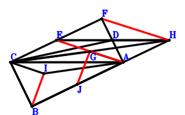
\(\because \) CA//DH and CA=2DH \(\therefore \small\overrightarrow{AD}=\dfrac{\small\overrightarrow{AC}}{2} + \small\overrightarrow{AH}\).\(\because \) D is the midpoint of EH \(\therefore \small\overrightarrow{AE}=2 \small\overrightarrow{AD} - \small\overrightarrow{AH}=\small\overrightarrow{AC} + \small\overrightarrow{AH}\).\(\because \) FCBA is a parallelogram \(\therefore \small\overrightarrow{AF}=- \small\overrightarrow{AB} + \small\overrightarrow{AC}\).\(\because \) G is the midpoint of CH \(\therefore \small\overrightarrow{AG}=\dfrac{\small\overrightarrow{AC}}{2} + \dfrac{\small\overrightarrow{AH}}{2}\).\(\because \) GCIA is a parallelogram \(\therefore \small\overrightarrow{AI}=\small\overrightarrow{AC} - \small\overrightarrow{AG}=\dfrac{\small\overrightarrow{AC}}{2} - \dfrac{\small\overrightarrow{AH}}{2}\).\(\because \) J is the midpoint of BA \(\therefore \small\overrightarrow{AJ}=\dfrac{\small\overrightarrow{AB}}{2}\).\(\because \) CB⊥BA \( \therefore\small\overrightarrow{AB} \cdot \small\overrightarrow{CB}=\small\overrightarrow{AB} \cdot \left(\small\overrightarrow{AB} - \small\overrightarrow{AC}\right)=\small\overrightarrow{AB}^{2} - \small\overrightarrow{AB} \cdot \small\overrightarrow{AC}=0.\)In conclusion, \(\small\overrightarrow{AE} \cdot \small\overrightarrow{HF} + 4 \small\overrightarrow{IB} \cdot \small\overrightarrow{JG}=\small\overrightarrow{AE} \cdot \left(\small\overrightarrow{AF} - \small\overrightarrow{AH}\right) + 4 \left(\small\overrightarrow{AB} - \small\overrightarrow{AI}\right) \cdot \left(\small\overrightarrow{AG} - \small\overrightarrow{AJ}\right)=\left(\small\overrightarrow{AC} + \small\overrightarrow{AH}\right) \cdot \left(- \small\overrightarrow{AB} + \small\overrightarrow{AC} - \small\overrightarrow{AH}\right) + 4 \left(- \dfrac{\small\overrightarrow{AB}}{2} + \dfrac{\small\overrightarrow{AC}}{2} + \dfrac{\small\overrightarrow{AH}}{2}\right) \cdot \left(\small\overrightarrow{AB} - \dfrac{\small\overrightarrow{AC}}{2} + \dfrac{\small\overrightarrow{AH}}{2}\right)=- 2 \small\overrightarrow{AB}^{2} + 2 \small\overrightarrow{AB} \cdot \small\overrightarrow{AC}=0\)\(\because\) EA//FH and BI//JG \(\therefore\) \(EA·FH=4·BI·JG\).
Exercise 4120： Let BCDA be a rectangle. GCIA be parallelograms. ECAF is a trapezoid with CA//EF and CA=2EF. J, E, G are the midpoints of BA, HA, CH, respectively. DH⊥HF. Prove that BI⊥GJ.
\(\because \) BCDA is a parallelogram \(\therefore \small\overrightarrow{AD}=- \small\overrightarrow{AB} + \small\overrightarrow{AC}\).\(\because \) E is the midpoint of HA \(\therefore \small\overrightarrow{AE}=\dfrac{\small\overrightarrow{AH}}{2}\).\(\because \) CA//EF and CA=2EF \(\therefore \small\overrightarrow{AF}=- \dfrac{\small\overrightarrow{AC}}{2} + \dfrac{\small\overrightarrow{AH}}{2}\).\(\because \) G is the midpoint of CH \(\therefore \small\overrightarrow{AG}=\dfrac{\small\overrightarrow{AC}}{2} + \dfrac{\small\overrightarrow{AH}}{2}\).\(\because \) GCIA is a parallelogram \(\therefore \small\overrightarrow{AI}=\small\overrightarrow{AC} - \small\overrightarrow{AG}=\dfrac{\small\overrightarrow{AC}}{2} - \dfrac{\small\overrightarrow{AH}}{2}\).\(\because \) J is the midpoint of BA \(\therefore \small\overrightarrow{AJ}=\dfrac{\small\overrightarrow{AB}}{2}\).\(\because \) CB⊥BA \(\therefore \small\overrightarrow{AB} \cdot \small\overrightarrow{CB}=\small\overrightarrow{AB} \cdot \left(\small\overrightarrow{AB} - \small\overrightarrow{AC}\right)=\small\overrightarrow{AB}^{2} - \small\overrightarrow{AB} \cdot \small\overrightarrow{AC}=0\) . . . . . . \(①\)\(\because \) DH⊥HF \(\therefore \small\overrightarrow{FH} \cdot \small\overrightarrow{HD}=\left(\small\overrightarrow{AD} - \small\overrightarrow{AH}\right) \cdot \left(- \small\overrightarrow{AF} + \small\overrightarrow{AH}\right)=\left(\dfrac{\small\overrightarrow{AC}}{2} + \dfrac{\small\overrightarrow{AH}}{2}\right) \cdot \left(- \small\overrightarrow{AB} + \small\overrightarrow{AC} - \small\overrightarrow{AH}\right)=- \dfrac{\small\overrightarrow{AB} \cdot \small\overrightarrow{AC}}{2} - \dfrac{\small\overrightarrow{AB} \cdot \small\overrightarrow{AH}}{2} + \dfrac{\small\overrightarrow{AC}^{2}}{2} - \dfrac{\small\overrightarrow{AH}^{2}}{2}=0\) . . . . . . \(②\)In conclusion, \(\small\overrightarrow{IB} \cdot \small\overrightarrow{JG}=\left(\small\overrightarrow{AB} - \small\overrightarrow{AI}\right) \cdot \left(\small\overrightarrow{AG} - \small\overrightarrow{AJ}\right)=\left(- \dfrac{\small\overrightarrow{AB}}{2} + \dfrac{\small\overrightarrow{AC}}{2} + \dfrac{\small\overrightarrow{AH}}{2}\right) \cdot \left(\small\overrightarrow{AB} - \dfrac{\small\overrightarrow{AC}}{2} + \dfrac{\small\overrightarrow{AH}}{2}\right)=- \dfrac{\small\overrightarrow{AB}^{2}}{2} + \dfrac{3 \small\overrightarrow{AB} \cdot \small\overrightarrow{AC}}{4} + \dfrac{\small\overrightarrow{AB} \cdot \small\overrightarrow{AH}}{4} - \dfrac{\small\overrightarrow{AC}^{2}}{4} + \dfrac{\small\overrightarrow{AH}^{2}}{4}=-1/2\cdot①-1/2\cdot②=0\), that is, BI⊥GJ.
Exercise 4789： Let GCBH, DCAH and ICBJ be parallelograms. I is the midpoint of CH. E is the midpoint of CF and BH. DA⊥AF. Given that G, J, A are collinear and C, B, A are collinear, prove that GA\(\cdot\)JA=BA\(\cdot\)CB.
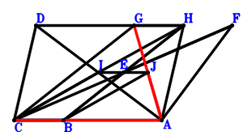
\(\because \) DCAH is a parallelogram \(\therefore \small\overrightarrow{AD}=\small\overrightarrow{AC} + \small\overrightarrow{AH}\).\(\because \) E is the midpoint of BH \(\therefore \small\overrightarrow{AE}=\dfrac{\small\overrightarrow{AB}}{2} + \dfrac{\small\overrightarrow{AH}}{2}\).\(\because \) E is the midpoint of CF \(\therefore \small\overrightarrow{AF}=- \small\overrightarrow{AC} + 2 \small\overrightarrow{AE}=\small\overrightarrow{AB} - \small\overrightarrow{AC} + \small\overrightarrow{AH}\).\(\because \) GCBH is a parallelogram \(\therefore \small\overrightarrow{AG}=- \small\overrightarrow{AB} + \small\overrightarrow{AC} + \small\overrightarrow{AH}\).\(\because \) I is the midpoint of CH \(\therefore \small\overrightarrow{AI}=\dfrac{\small\overrightarrow{AC}}{2} + \dfrac{\small\overrightarrow{AH}}{2}\).\(\because \) ICBJ is a parallelogram \(\therefore \small\overrightarrow{AJ}=\small\overrightarrow{AB} - \dfrac{\small\overrightarrow{AC}}{2} + \dfrac{\small\overrightarrow{AH}}{2}\).\(\because \) DA⊥AF \( \therefore- \small\overrightarrow{AD} \cdot \small\overrightarrow{AF}=- \left(\small\overrightarrow{AC} + \small\overrightarrow{AH}\right) \cdot \left(\small\overrightarrow{AB} - \small\overrightarrow{AC} + \small\overrightarrow{AH}\right)=- \small\overrightarrow{AB} \cdot \small\overrightarrow{AC} - \small\overrightarrow{AB} \cdot \small\overrightarrow{AH} + \small\overrightarrow{AC}^{2} - \small\overrightarrow{AH}^{2}=0.\)In conclusion, \(\small\overrightarrow{AB} \cdot \small\overrightarrow{CB} + \small\overrightarrow{AG} \cdot \small\overrightarrow{AJ}=\small\overrightarrow{AB} \cdot \left(\small\overrightarrow{AB} - \small\overrightarrow{AC}\right) + \small\overrightarrow{AG} \cdot \small\overrightarrow{AJ}=\small\overrightarrow{AB} \cdot \left(\small\overrightarrow{AB} - \small\overrightarrow{AC}\right) + \left(- \small\overrightarrow{AB} + \small\overrightarrow{AC} + \small\overrightarrow{AH}\right) \cdot \left(\small\overrightarrow{AB} - \dfrac{\small\overrightarrow{AC}}{2} + \dfrac{\small\overrightarrow{AH}}{2}\right)=\dfrac{\small\overrightarrow{AB} \cdot \small\overrightarrow{AC}}{2} + \dfrac{\small\overrightarrow{AB} \cdot \small\overrightarrow{AH}}{2} - \dfrac{\small\overrightarrow{AC}^{2}}{2} + \dfrac{\small\overrightarrow{AH}^{2}}{2}=0\)\(\because\) G, J, A are collinear and C, B, A are collinear \(\therefore\) GA\(\cdot\)JA=BA\(\cdot\)CB.
Exercise 4932： Let ECBF, HGCA, DCBH and IGAH be parallelograms. JCBA is a rectangle. E is the midpoint of CH. DA⊥AF. Prove that IH⊥HJ.
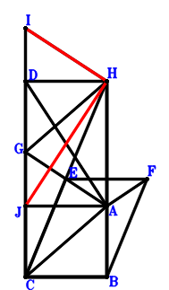
\(\because \) DCBH is a parallelogram \(\therefore \small\overrightarrow{AD}=- \small\overrightarrow{AB} + \small\overrightarrow{AC} + \small\overrightarrow{AH}\).\(\because \) E is the midpoint of CH \(\therefore \small\overrightarrow{AE}=\dfrac{\small\overrightarrow{AC}}{2} + \dfrac{\small\overrightarrow{AH}}{2}\).\(\because \) ECBF is a parallelogram \(\therefore \small\overrightarrow{AF}=\small\overrightarrow{AB} - \dfrac{\small\overrightarrow{AC}}{2} + \dfrac{\small\overrightarrow{AH}}{2}\).\(\because \) HGCA is a parallelogram \(\therefore \small\overrightarrow{AG}=\small\overrightarrow{AC} + \small\overrightarrow{AH}\).\(\because \) IGAH is a parallelogram \(\therefore \small\overrightarrow{AI}=\small\overrightarrow{AC} + 2 \small\overrightarrow{AH}\).\(\because \) JCBA is a parallelogram \(\therefore \small\overrightarrow{AJ}=- \small\overrightarrow{AB} + \small\overrightarrow{AC}\).\(\because \) DA⊥AF \(\therefore \small\overrightarrow{AD} \cdot \small\overrightarrow{AF}=\left(- \small\overrightarrow{AB} + \small\overrightarrow{AC} + \small\overrightarrow{AH}\right) \cdot \left(\small\overrightarrow{AB} - \dfrac{\small\overrightarrow{AC}}{2} + \dfrac{\small\overrightarrow{AH}}{2}\right)=- \small\overrightarrow{AB}^{2} + \dfrac{3 \small\overrightarrow{AB} \cdot \small\overrightarrow{AC}}{2} + \dfrac{\small\overrightarrow{AB} \cdot \small\overrightarrow{AH}}{2} - \dfrac{\small\overrightarrow{AC}^{2}}{2} + \dfrac{\small\overrightarrow{AH}^{2}}{2}=0\) . . . . . . \(①\)\(\because \) CB⊥BA \(\therefore \small\overrightarrow{AB} \cdot \small\overrightarrow{CB}=\small\overrightarrow{AB} \cdot \left(\small\overrightarrow{AB} - \small\overrightarrow{AC}\right)=\small\overrightarrow{AB}^{2} - \small\overrightarrow{AB} \cdot \small\overrightarrow{AC}=0\) . . . . . . \(②\)In conclusion, \(\small\overrightarrow{HI} \cdot \small\overrightarrow{HJ}=\left(- \small\overrightarrow{AH} + \small\overrightarrow{AI}\right) \cdot \left(- \small\overrightarrow{AH} + \small\overrightarrow{AJ}\right)=\left(\small\overrightarrow{AC} + \small\overrightarrow{AH}\right) \cdot \left(- \small\overrightarrow{AB} + \small\overrightarrow{AC} - \small\overrightarrow{AH}\right)=- \small\overrightarrow{AB} \cdot \small\overrightarrow{AC} - \small\overrightarrow{AB} \cdot \small\overrightarrow{AH} + \small\overrightarrow{AC}^{2} - \small\overrightarrow{AH}^{2}=-2\cdot①-2\cdot②=0\), that is, IH⊥HJ.
Exercise 6187： Let JHCA, ACBD and ECBF be parallelograms. E, H are the midpoints of CH, KJ, respectively. G is the midpoint of CA and IB. HD⊥AF and CB⊥BA. Prove that IH⊥KA.
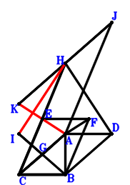
\(\because \) ACBD is a parallelogram \(\therefore \small\overrightarrow{AD}=\small\overrightarrow{AB} - \small\overrightarrow{AC}\).\(\because \) E is the midpoint of CH \(\therefore \small\overrightarrow{AE}=\dfrac{\small\overrightarrow{AC}}{2} + \dfrac{\small\overrightarrow{AH}}{2}\).\(\because \) ECBF is a parallelogram \(\therefore \small\overrightarrow{AF}=\small\overrightarrow{AB} - \dfrac{\small\overrightarrow{AC}}{2} + \dfrac{\small\overrightarrow{AH}}{2}\).\(\because \) G is the midpoint of CA \(\therefore \small\overrightarrow{AG}=\dfrac{\small\overrightarrow{AC}}{2}\).\(\because \) G is the midpoint of IB \(\therefore \small\overrightarrow{AI}=- \small\overrightarrow{AB} + 2 \small\overrightarrow{AG}=- \small\overrightarrow{AB} + \small\overrightarrow{AC}\).\(\because \) JHCA is a parallelogram \(\therefore \small\overrightarrow{AJ}=- \small\overrightarrow{AC} + \small\overrightarrow{AH}\).\(\because \) H is the midpoint of KJ \(\therefore \small\overrightarrow{AK}=2 \small\overrightarrow{AH} - \small\overrightarrow{AJ}=\small\overrightarrow{AC} + \small\overrightarrow{AH}\).\(\because \) CB⊥BA \(\therefore \small\overrightarrow{AB} \cdot \small\overrightarrow{CB}=\small\overrightarrow{AB} \cdot \left(\small\overrightarrow{AB} - \small\overrightarrow{AC}\right)=\small\overrightarrow{AB}^{2} - \small\overrightarrow{AB} \cdot \small\overrightarrow{AC}=0\) . . . . . . \(①\)\(\because \) HD⊥AF \(\therefore \small\overrightarrow{AF} \cdot \small\overrightarrow{DH}=\small\overrightarrow{AF} \cdot \left(- \small\overrightarrow{AD} + \small\overrightarrow{AH}\right)=\left(- \small\overrightarrow{AB} + \small\overrightarrow{AC} + \small\overrightarrow{AH}\right) \cdot \left(\small\overrightarrow{AB} - \dfrac{\small\overrightarrow{AC}}{2} + \dfrac{\small\overrightarrow{AH}}{2}\right)=- \small\overrightarrow{AB}^{2} + \dfrac{3 \small\overrightarrow{AB} \cdot \small\overrightarrow{AC}}{2} + \dfrac{\small\overrightarrow{AB} \cdot \small\overrightarrow{AH}}{2} - \dfrac{\small\overrightarrow{AC}^{2}}{2} + \dfrac{\small\overrightarrow{AH}^{2}}{2}=0\) . . . . . . \(②\)In conclusion, \(\small\overrightarrow{AK} \cdot \small\overrightarrow{HI}=\small\overrightarrow{AK} \cdot \left(- \small\overrightarrow{AH} + \small\overrightarrow{AI}\right)=\left(\small\overrightarrow{AC} + \small\overrightarrow{AH}\right) \cdot \left(- \small\overrightarrow{AB} + \small\overrightarrow{AC} - \small\overrightarrow{AH}\right)=- \small\overrightarrow{AB} \cdot \small\overrightarrow{AC} - \small\overrightarrow{AB} \cdot \small\overrightarrow{AH} + \small\overrightarrow{AC}^{2} - \small\overrightarrow{AH}^{2}=-2\cdot①-2\cdot②=0\), that is, IH⊥KA.
Exercise 6207： Let JHAB and BCHI be parallelograms. DCAB is a trapezoid with DC//BA and DC=2BA. G, E, F are the midpoints of CH, DH, BA, respectively. EC⊥GF, IA⊥CH and CB⊥BA. Prove that HA⊥JC.
Exercise 6628： Let AECB be a rectangle. F, G are the midpoints of HC, AB, respectively. I is the midpoint of CJ and HB. D is the midpoint of AC and EB. EH⊥HC and EF⊥FG. Prove that HA⊥AJ.
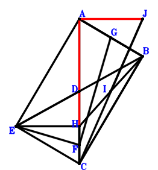
\(\because \) D is the midpoint of AC \(\therefore \small\overrightarrow{CD}=\dfrac{\small\overrightarrow{CA}}{2}\).\(\because \) D is the midpoint of EB \(\therefore \small\overrightarrow{CE}=- \small\overrightarrow{CB} + 2 \small\overrightarrow{CD}=\small\overrightarrow{CA} - \small\overrightarrow{CB}\).\(\because \) F is the midpoint of HC \(\therefore \small\overrightarrow{CF}=\dfrac{\small\overrightarrow{CH}}{2}\).\(\because \) G is the midpoint of AB \(\therefore \small\overrightarrow{CG}=\dfrac{\small\overrightarrow{CA}}{2} + \dfrac{\small\overrightarrow{CB}}{2}\).\(\because \) AECB is a parallelogram \(\therefore \small\overrightarrow{CI}=\dfrac{\small\overrightarrow{CB}}{2} + \dfrac{\small\overrightarrow{CH}}{2}\).\(\because \) I is the midpoint of HB \(\therefore \small\overrightarrow{CJ}=2 \small\overrightarrow{CI}=\small\overrightarrow{CB} + \small\overrightarrow{CH}\).\(\because \) I is the midpoint of CJ \(\therefore \small\overrightarrow{EF} \cdot \small\overrightarrow{GF}=\left(- \small\overrightarrow{CE} + \small\overrightarrow{CF}\right) \cdot \left(\small\overrightarrow{CF} - \small\overrightarrow{CG}\right)=\left(- \small\overrightarrow{CA} + \small\overrightarrow{CB} + \dfrac{\small\overrightarrow{CH}}{2}\right) \cdot \left(- \dfrac{\small\overrightarrow{CA}}{2} - \dfrac{\small\overrightarrow{CB}}{2} + \dfrac{\small\overrightarrow{CH}}{2}\right)=\dfrac{\small\overrightarrow{CA}^{2}}{2} - \dfrac{3 \small\overrightarrow{CA} \cdot \small\overrightarrow{CH}}{4} - \dfrac{\small\overrightarrow{CB}^{2}}{2} + \dfrac{\small\overrightarrow{CB} \cdot \small\overrightarrow{CH}}{4} + \dfrac{\small\overrightarrow{CH}^{2}}{4}=0\) . . . . . . \(①\)\(\because \) EF⊥FG \(\therefore \small\overrightarrow{AB} \cdot \small\overrightarrow{CB}=\small\overrightarrow{CB} \cdot \left(- \small\overrightarrow{CA} + \small\overrightarrow{CB}\right)=- \small\overrightarrow{CA} \cdot \small\overrightarrow{CB} + \small\overrightarrow{CB}^{2}=0\) . . . . . . \(②\)\(\because \) AB⊥BC \(\therefore \small\overrightarrow{HC} \cdot \small\overrightarrow{HE}=- \small\overrightarrow{CH} \cdot \left(\small\overrightarrow{CE} - \small\overrightarrow{CH}\right)=- \small\overrightarrow{CH} \cdot \left(\small\overrightarrow{CA} - \small\overrightarrow{CB} - \small\overrightarrow{CH}\right)=- \small\overrightarrow{CA} \cdot \small\overrightarrow{CH} + \small\overrightarrow{CB} \cdot \small\overrightarrow{CH} + \small\overrightarrow{CH}^{2}=0\) . . . . . . \(③\)In conclusion, \(\small\overrightarrow{HA} \cdot \small\overrightarrow{JA}=\left(\small\overrightarrow{CA} - \small\overrightarrow{CH}\right) \cdot \left(\small\overrightarrow{CA} - \small\overrightarrow{CJ}\right)=\left(\small\overrightarrow{CA} - \small\overrightarrow{CH}\right) \cdot \left(\small\overrightarrow{CA} - \small\overrightarrow{CB} - \small\overrightarrow{CH}\right)=\small\overrightarrow{CA}^{2} - \small\overrightarrow{CA} \cdot \small\overrightarrow{CB} - 2 \small\overrightarrow{CA} \cdot \small\overrightarrow{CH} + \small\overrightarrow{CB} \cdot \small\overrightarrow{CH} + \small\overrightarrow{CH}^{2}=2\cdot①+②+1/2\cdot③=0\), that is, HA⊥AJ.
Exercise 7071： Let BCAD and BCHI be parallelograms. E is the midpoint of CH. J is the midpoint of BH and KA. F is the midpoint of BE and CG. HD⊥GA, IA⊥CH and CB⊥BA. Prove that HA⊥KC.
\(\because \) BCAD is a parallelogram \(\therefore \small\overrightarrow{CD}=\small\overrightarrow{CA} + \small\overrightarrow{CB}\).\(\because \) E is the midpoint of CH \(\therefore \small\overrightarrow{CE}=\dfrac{\small\overrightarrow{CH}}{2}\).\(\because \) F is the midpoint of BE \(\therefore \small\overrightarrow{CF}=\dfrac{\small\overrightarrow{CB}}{2} + \dfrac{\small\overrightarrow{CE}}{2}=\dfrac{\small\overrightarrow{CB}}{2} + \dfrac{\small\overrightarrow{CH}}{4}\).\(\because \) F is the midpoint of CG \(\therefore \small\overrightarrow{CG}=2 \small\overrightarrow{CF}=\small\overrightarrow{CB} + \dfrac{\small\overrightarrow{CH}}{2}\).\(\because \) BCHI is a parallelogram \(\therefore \small\overrightarrow{CI}=\small\overrightarrow{CB} + \small\overrightarrow{CH}\).\(\because \) J is the midpoint of BH \(\therefore \small\overrightarrow{CJ}=\dfrac{\small\overrightarrow{CB}}{2} + \dfrac{\small\overrightarrow{CH}}{2}\).\(\because \) J is the midpoint of KA \(\therefore \small\overrightarrow{CK}=- \small\overrightarrow{CA} + 2 \small\overrightarrow{CJ}=- \small\overrightarrow{CA} + \small\overrightarrow{CB} + \small\overrightarrow{CH}\).\(\because \) CB⊥BA \(\therefore \small\overrightarrow{AB} \cdot \small\overrightarrow{CB}=\small\overrightarrow{CB} \cdot \left(- \small\overrightarrow{CA} + \small\overrightarrow{CB}\right)=- \small\overrightarrow{CA} \cdot \small\overrightarrow{CB} + \small\overrightarrow{CB}^{2}=0\) . . . . . . \(①\)\(\because \) HD⊥GA \(\therefore \small\overrightarrow{AG} \cdot \small\overrightarrow{DH}=\left(- \small\overrightarrow{CA} + \small\overrightarrow{CG}\right) \cdot \left(- \small\overrightarrow{CD} + \small\overrightarrow{CH}\right)=\left(- \small\overrightarrow{CA} - \small\overrightarrow{CB} + \small\overrightarrow{CH}\right) \cdot \left(- \small\overrightarrow{CA} + \small\overrightarrow{CB} + \dfrac{\small\overrightarrow{CH}}{2}\right)=\small\overrightarrow{CA}^{2} - \dfrac{3 \small\overrightarrow{CA} \cdot \small\overrightarrow{CH}}{2} - \small\overrightarrow{CB}^{2} + \dfrac{\small\overrightarrow{CB} \cdot \small\overrightarrow{CH}}{2} + \dfrac{\small\overrightarrow{CH}^{2}}{2}=0\) . . . . . . \(②\)\(\because \) IA⊥CH \(\therefore \small\overrightarrow{HC} \cdot \small\overrightarrow{IA}=- \small\overrightarrow{CH} \cdot \left(\small\overrightarrow{CA} - \small\overrightarrow{CI}\right)=- \small\overrightarrow{CH} \cdot \left(\small\overrightarrow{CA} - \small\overrightarrow{CB} - \small\overrightarrow{CH}\right)=- \small\overrightarrow{CA} \cdot \small\overrightarrow{CH} + \small\overrightarrow{CB} \cdot \small\overrightarrow{CH} + \small\overrightarrow{CH}^{2}=0\) . . . . . . \(③\)In conclusion, \(\small\overrightarrow{HA} \cdot \small\overrightarrow{KC}=- \small\overrightarrow{CK} \cdot \left(\small\overrightarrow{CA} - \small\overrightarrow{CH}\right)=- \left(\small\overrightarrow{CA} - \small\overrightarrow{CH}\right) \cdot \left(- \small\overrightarrow{CA} + \small\overrightarrow{CB} + \small\overrightarrow{CH}\right)=\small\overrightarrow{CA}^{2} - \small\overrightarrow{CA} \cdot \small\overrightarrow{CB} - 2 \small\overrightarrow{CA} \cdot \small\overrightarrow{CH} + \small\overrightarrow{CB} \cdot \small\overrightarrow{CH} + \small\overrightarrow{CH}^{2}=①+②+1/2\cdot③=0\), that is, HA⊥KC.
Exercise 8570： Let IHAB and KCAH be parallelograms. L, F, G, J are the midpoints of KH, CH, BA, HA, respectively. D is the midpoint of EB and CA. EF⊥FG and CB⊥BA. Prove that CI⊥LJ.
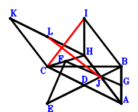
\(\because \) D is the midpoint of CA \(\therefore \small\overrightarrow{AD}=\dfrac{\small\overrightarrow{AC}}{2}\).\(\because \) D is the midpoint of EB \(\therefore \small\overrightarrow{AE}=- \small\overrightarrow{AB} + 2 \small\overrightarrow{AD}=- \small\overrightarrow{AB} + \small\overrightarrow{AC}\).\(\because \) F is the midpoint of CH \(\therefore \small\overrightarrow{AF}=\dfrac{\small\overrightarrow{AC}}{2} + \dfrac{\small\overrightarrow{AH}}{2}\).\(\because \) G is the midpoint of BA \(\therefore \small\overrightarrow{AG}=\dfrac{\small\overrightarrow{AB}}{2}\).\(\because \) IHAB is a parallelogram \(\therefore \small\overrightarrow{AI}=\small\overrightarrow{AB} + \small\overrightarrow{AH}\).\(\because \) J is the midpoint of HA \(\therefore \small\overrightarrow{AJ}=\dfrac{\small\overrightarrow{AH}}{2}\).\(\because \) KCAH is a parallelogram \(\therefore \small\overrightarrow{AK}=\small\overrightarrow{AC} + \small\overrightarrow{AH}\).\(\because \) L is the midpoint of KH \(\therefore \small\overrightarrow{AL}=\dfrac{\small\overrightarrow{AH}}{2} + \dfrac{\small\overrightarrow{AK}}{2}=\dfrac{\small\overrightarrow{AC}}{2} + \small\overrightarrow{AH}\).\(\because \) EF⊥FG \(\therefore \small\overrightarrow{EF} \cdot \small\overrightarrow{GF}=\left(- \small\overrightarrow{AE} + \small\overrightarrow{AF}\right) \cdot \left(\small\overrightarrow{AF} - \small\overrightarrow{AG}\right)=\left(- \dfrac{\small\overrightarrow{AB}}{2} + \dfrac{\small\overrightarrow{AC}}{2} + \dfrac{\small\overrightarrow{AH}}{2}\right) \cdot \left(\small\overrightarrow{AB} - \dfrac{\small\overrightarrow{AC}}{2} + \dfrac{\small\overrightarrow{AH}}{2}\right)=- \dfrac{\small\overrightarrow{AB}^{2}}{2} + \dfrac{3 \small\overrightarrow{AB} \cdot \small\overrightarrow{AC}}{4} + \dfrac{\small\overrightarrow{AB} \cdot \small\overrightarrow{AH}}{4} - \dfrac{\small\overrightarrow{AC}^{2}}{4} + \dfrac{\small\overrightarrow{AH}^{2}}{4}=0\) . . . . . . \(①\)\(\because \) CB⊥BA \(\therefore \small\overrightarrow{AB} \cdot \small\overrightarrow{CB}=\small\overrightarrow{AB} \cdot \left(\small\overrightarrow{AB} - \small\overrightarrow{AC}\right)=\small\overrightarrow{AB}^{2} - \small\overrightarrow{AB} \cdot \small\overrightarrow{AC}=0\) . . . . . . \(②\)In conclusion, \(\small\overrightarrow{IC} \cdot \small\overrightarrow{JL}=\left(\small\overrightarrow{AC} - \small\overrightarrow{AI}\right) \cdot \left(- \small\overrightarrow{AJ} + \small\overrightarrow{AL}\right)=\left(\dfrac{\small\overrightarrow{AC}}{2} + \dfrac{\small\overrightarrow{AH}}{2}\right) \cdot \left(- \small\overrightarrow{AB} + \small\overrightarrow{AC} - \small\overrightarrow{AH}\right)=- \dfrac{\small\overrightarrow{AB} \cdot \small\overrightarrow{AC}}{2} - \dfrac{\small\overrightarrow{AB} \cdot \small\overrightarrow{AH}}{2} + \dfrac{\small\overrightarrow{AC}^{2}}{2} - \dfrac{\small\overrightarrow{AH}^{2}}{2}=-2\cdot①-②=0\), that is, CI⊥LJ.
Exercise 10658： Let HBGA, FBAH and ICBJ be parallelograms. ECDH is a trapezoid with EC//HD and EC=2HD. D, I are the midpoints of HA, CH, respectively. EA⊥CF. Given that C, B, A are collinear and CG//JA, prove that \(CG·JA=BA·CB\).
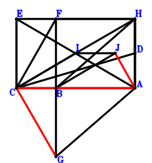
\(\because \) D is the midpoint of HA \(\therefore \small\overrightarrow{AD}=\dfrac{\small\overrightarrow{AH}}{2}\).\(\because \) EC//HD and EC=2HD \(\therefore \small\overrightarrow{AE}=\small\overrightarrow{AC} - 2 \small\overrightarrow{AD} + 2 \small\overrightarrow{AH}=\small\overrightarrow{AC} + \small\overrightarrow{AH}\).\(\because \) FBAH is a parallelogram \(\therefore \small\overrightarrow{AF}=\small\overrightarrow{AB} + \small\overrightarrow{AH}\).\(\because \) HBGA is a parallelogram \(\therefore \small\overrightarrow{AG}=\small\overrightarrow{AB} - \small\overrightarrow{AH}\).\(\because \) I is the midpoint of CH \(\therefore \small\overrightarrow{AI}=\dfrac{\small\overrightarrow{AC}}{2} + \dfrac{\small\overrightarrow{AH}}{2}\).\(\because \) ICBJ is a parallelogram \(\therefore \small\overrightarrow{AJ}=\small\overrightarrow{AB} - \dfrac{\small\overrightarrow{AC}}{2} + \dfrac{\small\overrightarrow{AH}}{2}\).\(\because \) EA⊥CF \( \therefore\small\overrightarrow{AE} \cdot \small\overrightarrow{FC}=\small\overrightarrow{AE} \cdot \left(\small\overrightarrow{AC} - \small\overrightarrow{AF}\right)=\left(\small\overrightarrow{AC} + \small\overrightarrow{AH}\right) \cdot \left(- \small\overrightarrow{AB} + \small\overrightarrow{AC} - \small\overrightarrow{AH}\right)=- \small\overrightarrow{AB} \cdot \small\overrightarrow{AC} - \small\overrightarrow{AB} \cdot \small\overrightarrow{AH} + \small\overrightarrow{AC}^{2} - \small\overrightarrow{AH}^{2}=0.\)In conclusion, \(\small\overrightarrow{AB} \cdot \small\overrightarrow{CB} + \small\overrightarrow{AJ} \cdot \small\overrightarrow{GC}=\small\overrightarrow{AB} \cdot \left(\small\overrightarrow{AB} - \small\overrightarrow{AC}\right) + \small\overrightarrow{AJ} \cdot \left(\small\overrightarrow{AC} - \small\overrightarrow{AG}\right)=\small\overrightarrow{AB} \cdot \left(\small\overrightarrow{AB} - \small\overrightarrow{AC}\right) + \left(- \small\overrightarrow{AB} + \small\overrightarrow{AC} + \small\overrightarrow{AH}\right) \cdot \left(\small\overrightarrow{AB} - \dfrac{\small\overrightarrow{AC}}{2} + \dfrac{\small\overrightarrow{AH}}{2}\right)=\dfrac{\small\overrightarrow{AB} \cdot \small\overrightarrow{AC}}{2} + \dfrac{\small\overrightarrow{AB} \cdot \small\overrightarrow{AH}}{2} - \dfrac{\small\overrightarrow{AC}^{2}}{2} + \dfrac{\small\overrightarrow{AH}^{2}}{2}=0\)\(\because\) C, B, A are collinear and CG//JA \(\therefore\) \(CG·JA=BA·CB\).
Exercise 11221： Let BHEC be a parallelogram. DHAB is a trapezoid with DH//BA and DH=2BA. GHAF is a trapezoid with GH//FA and GH=2FA. F is the midpoint of HC. I is the midpoint of JA and BH. DC⊥EA. Given that B, C, A are collinear and GH//JC, prove that \(GH·JC=2·BA·BC\).
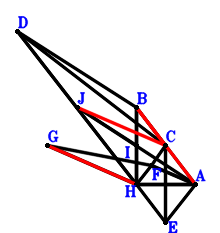
\(\because \) DH//BA and DH=2BA \(\therefore \small\overrightarrow{HD}=- 2 \small\overrightarrow{HA} + 2 \small\overrightarrow{HB}\).\(\because \) BHEC is a parallelogram \(\therefore \small\overrightarrow{HE}=- \small\overrightarrow{HB} + \small\overrightarrow{HC}\).\(\because \) F is the midpoint of HC \(\therefore \small\overrightarrow{HF}=\dfrac{\small\overrightarrow{HC}}{2}\).\(\because \) GH//FA and GH=2FA \(\therefore \small\overrightarrow{HG}=- 2 \small\overrightarrow{HA} + 2 \small\overrightarrow{HF}=- 2 \small\overrightarrow{HA} + \small\overrightarrow{HC}\).\(\because \) I is the midpoint of BH \(\therefore \small\overrightarrow{HI}=\dfrac{\small\overrightarrow{HB}}{2}\).\(\because \) I is the midpoint of JA \(\therefore \small\overrightarrow{HJ}=- \small\overrightarrow{HA} + 2 \small\overrightarrow{HI}=- \small\overrightarrow{HA} + \small\overrightarrow{HB}\).\(\because \) DC⊥EA \( \therefore\small\overrightarrow{AE} \cdot \small\overrightarrow{CD}=\left(- \small\overrightarrow{HA} + \small\overrightarrow{HE}\right) \cdot \left(- \small\overrightarrow{HC} + \small\overrightarrow{HD}\right)=\left(- 2 \small\overrightarrow{HA} + 2 \small\overrightarrow{HB} - \small\overrightarrow{HC}\right) \cdot \left(- \small\overrightarrow{HA} - \small\overrightarrow{HB} + \small\overrightarrow{HC}\right)=2 \small\overrightarrow{HA}^{2} - \small\overrightarrow{HA} \cdot \small\overrightarrow{HC} - 2 \small\overrightarrow{HB}^{2} + 3 \small\overrightarrow{HB} \cdot \small\overrightarrow{HC} - \small\overrightarrow{HC}^{2}=0.\)In conclusion, \(2 \small\overrightarrow{AB} \cdot \small\overrightarrow{CB} + \small\overrightarrow{HG} \cdot \small\overrightarrow{JC}=\small\overrightarrow{HG} \cdot \left(\small\overrightarrow{HC} - \small\overrightarrow{HJ}\right) + 2 \left(- \small\overrightarrow{HA} + \small\overrightarrow{HB}\right) \cdot \left(\small\overrightarrow{HB} - \small\overrightarrow{HC}\right)=\left(- 2 \small\overrightarrow{HA} + \small\overrightarrow{HC}\right) \cdot \left(\small\overrightarrow{HA} - \small\overrightarrow{HB} + \small\overrightarrow{HC}\right) + 2 \left(- \small\overrightarrow{HA} + \small\overrightarrow{HB}\right) \cdot \left(\small\overrightarrow{HB} - \small\overrightarrow{HC}\right)=- 2 \small\overrightarrow{HA}^{2} + \small\overrightarrow{HA} \cdot \small\overrightarrow{HC} + 2 \small\overrightarrow{HB}^{2} - 3 \small\overrightarrow{HB} \cdot \small\overrightarrow{HC} + \small\overrightarrow{HC}^{2}=0\)\(\because\) B, C, A are collinear and GH//JC \(\therefore\) \(GH·JC=2·BA·BC\).
Exercise 11773： Let GDAH, ECFA and DCAH be parallelograms. E is the midpoint of CH. I is the midpoint of JA and BH. DB⊥BF. Given that B, C, A are collinear and GH//JC, prove that \(GH·JC=2·BA·BC\).
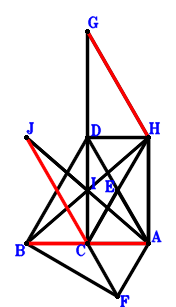
\(\because \) DCAH is a parallelogram \(\therefore \small\overrightarrow{AD}=\small\overrightarrow{AC} + \small\overrightarrow{AH}\).\(\because \) E is the midpoint of CH \(\therefore \small\overrightarrow{AE}=\dfrac{\small\overrightarrow{AC}}{2} + \dfrac{\small\overrightarrow{AH}}{2}\).\(\because \) ECFA is a parallelogram \(\therefore \small\overrightarrow{AF}=\small\overrightarrow{AC} - \small\overrightarrow{AE}=\dfrac{\small\overrightarrow{AC}}{2} - \dfrac{\small\overrightarrow{AH}}{2}\).\(\because \) GDAH is a parallelogram \(\therefore \small\overrightarrow{AG}=\small\overrightarrow{AC} + 2 \small\overrightarrow{AH}\).\(\because \) I is the midpoint of BH \(\therefore \small\overrightarrow{AI}=\dfrac{\small\overrightarrow{AB}}{2} + \dfrac{\small\overrightarrow{AH}}{2}\).\(\because \) I is the midpoint of JA \(\therefore \small\overrightarrow{AJ}=2 \small\overrightarrow{AI}=\small\overrightarrow{AB} + \small\overrightarrow{AH}\).\(\because \) DB⊥BF \( \therefore\small\overrightarrow{BD} \cdot \small\overrightarrow{FB}=\left(- \small\overrightarrow{AB} + \small\overrightarrow{AD}\right) \cdot \left(\small\overrightarrow{AB} - \small\overrightarrow{AF}\right)=\left(- \small\overrightarrow{AB} + \small\overrightarrow{AC} + \small\overrightarrow{AH}\right) \cdot \left(\small\overrightarrow{AB} - \dfrac{\small\overrightarrow{AC}}{2} + \dfrac{\small\overrightarrow{AH}}{2}\right)=- \small\overrightarrow{AB}^{2} + \dfrac{3 \small\overrightarrow{AB} \cdot \small\overrightarrow{AC}}{2} + \dfrac{\small\overrightarrow{AB} \cdot \small\overrightarrow{AH}}{2} - \dfrac{\small\overrightarrow{AC}^{2}}{2} + \dfrac{\small\overrightarrow{AH}^{2}}{2}=0.\)In conclusion, \(2 \small\overrightarrow{AB} \cdot \small\overrightarrow{CB} + \small\overrightarrow{HG} \cdot \small\overrightarrow{JC}=2 \small\overrightarrow{AB} \cdot \left(\small\overrightarrow{AB} - \small\overrightarrow{AC}\right) + \left(\small\overrightarrow{AC} - \small\overrightarrow{AJ}\right) \cdot \left(\small\overrightarrow{AG} - \small\overrightarrow{AH}\right)=2 \small\overrightarrow{AB} \cdot \left(\small\overrightarrow{AB} - \small\overrightarrow{AC}\right) + \left(\small\overrightarrow{AC} + \small\overrightarrow{AH}\right) \cdot \left(- \small\overrightarrow{AB} + \small\overrightarrow{AC} - \small\overrightarrow{AH}\right)=2 \small\overrightarrow{AB}^{2} - 3 \small\overrightarrow{AB} \cdot \small\overrightarrow{AC} - \small\overrightarrow{AB} \cdot \small\overrightarrow{AH} + \small\overrightarrow{AC}^{2} - \small\overrightarrow{AH}^{2}=0\)\(\because\) B, C, A are collinear and GH//JC \(\therefore\) \(GH·JC=2·BA·BC\).
Exercise 12175： Let IDAH and DCAH be parallelograms. DCGA is a cyclic quadrilateral, DG intersects CA at B. E is the midpoint of BJ,CA and FG. F is the midpoint of DA and CH. Prove that IH⊥HJ.
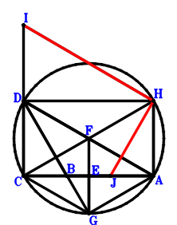
\(\because \) DCAH is a parallelogram \(\therefore \small\overrightarrow{AD}=\small\overrightarrow{AC} + \small\overrightarrow{AH}\).\(\because \) E is the midpoint of CA \(\therefore \small\overrightarrow{AE}=\dfrac{\small\overrightarrow{AC}}{2}\).\(\because \) F is the midpoint of CH \(\therefore \small\overrightarrow{AF}=\dfrac{\small\overrightarrow{AC}}{2} + \dfrac{\small\overrightarrow{AH}}{2}\).\(\because \) E is the midpoint of FG \(\therefore \small\overrightarrow{AG}=\small\overrightarrow{AC} - \small\overrightarrow{AF}=\dfrac{\small\overrightarrow{AC}}{2} - \dfrac{\small\overrightarrow{AH}}{2}\).\(\because \) F is the midpoint of DA \(\therefore \small\overrightarrow{AI}=\small\overrightarrow{AC} + 2 \small\overrightarrow{AH}\).\(\because \) IDAH is a parallelogram \(\therefore \small\overrightarrow{AJ}=- \small\overrightarrow{AB} + 2 \small\overrightarrow{AE}=- \small\overrightarrow{AB} + \small\overrightarrow{AC}\).\(\because \) E is the midpoint of BJ \( \therefore\small\overrightarrow{AB} \cdot \small\overrightarrow{CB} + \small\overrightarrow{BD} \cdot \small\overrightarrow{GB}=\small\overrightarrow{AB} \cdot \left(\small\overrightarrow{AB} - \small\overrightarrow{AC}\right) + \left(- \small\overrightarrow{AB} + \small\overrightarrow{AD}\right) \cdot \left(\small\overrightarrow{AB} - \small\overrightarrow{AG}\right)=\small\overrightarrow{AB} \cdot \left(\small\overrightarrow{AB} - \small\overrightarrow{AC}\right) + \left(- \small\overrightarrow{AB} + \small\overrightarrow{AC} + \small\overrightarrow{AH}\right) \cdot \left(\small\overrightarrow{AB} - \dfrac{\small\overrightarrow{AC}}{2} + \dfrac{\small\overrightarrow{AH}}{2}\right)=\dfrac{\small\overrightarrow{AB} \cdot \small\overrightarrow{AC}}{2} + \dfrac{\small\overrightarrow{AB} \cdot \small\overrightarrow{AH}}{2} - \dfrac{\small\overrightarrow{AC}^{2}}{2} + \dfrac{\small\overrightarrow{AH}^{2}}{2}=0.\)In conclusion, \(\small\overrightarrow{HI} \cdot \small\overrightarrow{HJ}=\left(- \small\overrightarrow{AH} + \small\overrightarrow{AI}\right) \cdot \left(- \small\overrightarrow{AH} + \small\overrightarrow{AJ}\right)=\left(\small\overrightarrow{AC} + \small\overrightarrow{AH}\right) \cdot \left(- \small\overrightarrow{AB} + \small\overrightarrow{AC} - \small\overrightarrow{AH}\right)=- \small\overrightarrow{AB} \cdot \small\overrightarrow{AC} - \small\overrightarrow{AB} \cdot \small\overrightarrow{AH} + \small\overrightarrow{AC}^{2} - \small\overrightarrow{AH}^{2}=0\), that is, IH⊥HJ.
Exercise 12704： Let HAGB be a parallelogram. HFAC is a trapezoid with HC//FA and HC=2FA. IBCH is a trapezoid with IH//BC and IH=2BC. E, J, D are the midpoints of AC, IC, HB, respectively. DE⊥FH. Given that A, B, C are collinear and GC//AJ, prove that \(AJ·GC=AB·BC\).
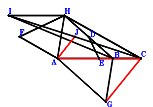
\(\because \) D is the midpoint of HB \(\therefore \small\overrightarrow{CD}=\dfrac{\small\overrightarrow{CB}}{2} + \dfrac{\small\overrightarrow{CH}}{2}\).\(\because \) E is the midpoint of AC \(\therefore \small\overrightarrow{CE}=\dfrac{\small\overrightarrow{CA}}{2}\).\(\because \) HC//FA and HC=2FA \(\therefore \small\overrightarrow{CF}=\small\overrightarrow{CA} + \dfrac{\small\overrightarrow{CH}}{2}\).\(\because \) HAGB is a parallelogram \(\therefore \small\overrightarrow{CG}=\small\overrightarrow{CA} + \small\overrightarrow{CB} - \small\overrightarrow{CH}\).\(\because \) IH//BC and IH=2BC \(\therefore \small\overrightarrow{CI}=2 \small\overrightarrow{CB} + \small\overrightarrow{CH}\).\(\because \) J is the midpoint of IC \(\therefore \small\overrightarrow{CJ}=\dfrac{\small\overrightarrow{CI}}{2}=\small\overrightarrow{CB} + \dfrac{\small\overrightarrow{CH}}{2}\).\(\because \) DE⊥FH \( \therefore\small\overrightarrow{DE} \cdot \small\overrightarrow{FH}=\left(- \small\overrightarrow{CD} + \small\overrightarrow{CE}\right) \cdot \left(- \small\overrightarrow{CF} + \small\overrightarrow{CH}\right)=\left(- \small\overrightarrow{CA} + \dfrac{\small\overrightarrow{CH}}{2}\right) \cdot \left(\dfrac{\small\overrightarrow{CA}}{2} - \dfrac{\small\overrightarrow{CB}}{2} - \dfrac{\small\overrightarrow{CH}}{2}\right)=- \dfrac{\small\overrightarrow{CA}^{2}}{2} + \dfrac{\small\overrightarrow{CA} \cdot \small\overrightarrow{CB}}{2} + \dfrac{3 \small\overrightarrow{CA} \cdot \small\overrightarrow{CH}}{4} - \dfrac{\small\overrightarrow{CB} \cdot \small\overrightarrow{CH}}{4} - \dfrac{\small\overrightarrow{CH}^{2}}{4}=0.\)In conclusion, \(\small\overrightarrow{AB} \cdot \small\overrightarrow{CB} + \small\overrightarrow{AJ} \cdot \small\overrightarrow{GC}=\small\overrightarrow{CB} \cdot \left(- \small\overrightarrow{CA} + \small\overrightarrow{CB}\right) - \small\overrightarrow{CG} \cdot \left(- \small\overrightarrow{CA} + \small\overrightarrow{CJ}\right)=\small\overrightarrow{CB} \cdot \left(- \small\overrightarrow{CA} + \small\overrightarrow{CB}\right) - \left(- \small\overrightarrow{CA} + \small\overrightarrow{CB} + \dfrac{\small\overrightarrow{CH}}{2}\right) \cdot \left(\small\overrightarrow{CA} + \small\overrightarrow{CB} - \small\overrightarrow{CH}\right)=\small\overrightarrow{CA}^{2} - \small\overrightarrow{CA} \cdot \small\overrightarrow{CB} - \dfrac{3 \small\overrightarrow{CA} \cdot \small\overrightarrow{CH}}{2} + \dfrac{\small\overrightarrow{CB} \cdot \small\overrightarrow{CH}}{2} + \dfrac{\small\overrightarrow{CH}^{2}}{2}=0\)\(\because\) A, B, C are collinear and GC//AJ \(\therefore\) \(AJ·GC=AB·BC\).
Exercise 13366： Let DCBA be a rectangle.HCGA is a parallelogram. HJEI is a trapezoid with JH//EI and JH=2EI. F, E, I are the midpoints of AB, CH, HA, respectively. DE⊥EF and CB⊥BA. Prove that GB⊥JA.
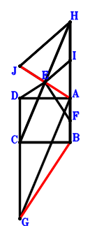
\(\because \) DCBA is a parallelogram \(\therefore \small\overrightarrow{AD}=- \small\overrightarrow{AB} + \small\overrightarrow{AC}\).\(\because \) E is the midpoint of CH \(\therefore \small\overrightarrow{AE}=\dfrac{\small\overrightarrow{AC}}{2} + \dfrac{\small\overrightarrow{AH}}{2}\).\(\because \) F is the midpoint of AB \(\therefore \small\overrightarrow{AF}=\dfrac{\small\overrightarrow{AB}}{2}\).\(\because \) HCGA is a parallelogram \(\therefore \small\overrightarrow{AG}=\small\overrightarrow{AC} - \small\overrightarrow{AH}\).\(\because \) I is the midpoint of HA \(\therefore \small\overrightarrow{AI}=\dfrac{\small\overrightarrow{AH}}{2}\).\(\because \) JH//EI and JH=2EI \(\therefore \small\overrightarrow{AJ}=2 \small\overrightarrow{AE}=\small\overrightarrow{AC} + \small\overrightarrow{AH}\).\(\because \) DE⊥EF \(\therefore \small\overrightarrow{DE} \cdot \small\overrightarrow{FE}=\left(- \small\overrightarrow{AD} + \small\overrightarrow{AE}\right) \cdot \left(\small\overrightarrow{AE} - \small\overrightarrow{AF}\right)=\left(- \dfrac{\small\overrightarrow{AB}}{2} + \dfrac{\small\overrightarrow{AC}}{2} + \dfrac{\small\overrightarrow{AH}}{2}\right) \cdot \left(\small\overrightarrow{AB} - \dfrac{\small\overrightarrow{AC}}{2} + \dfrac{\small\overrightarrow{AH}}{2}\right)=- \dfrac{\small\overrightarrow{AB}^{2}}{2} + \dfrac{3 \small\overrightarrow{AB} \cdot \small\overrightarrow{AC}}{4} + \dfrac{\small\overrightarrow{AB} \cdot \small\overrightarrow{AH}}{4} - \dfrac{\small\overrightarrow{AC}^{2}}{4} + \dfrac{\small\overrightarrow{AH}^{2}}{4}=0\) . . . . . . \(①\)\(\because \) CB⊥BA \(\therefore \small\overrightarrow{AB} \cdot \small\overrightarrow{CB}=\small\overrightarrow{AB} \cdot \left(\small\overrightarrow{AB} - \small\overrightarrow{AC}\right)=\small\overrightarrow{AB}^{2} - \small\overrightarrow{AB} \cdot \small\overrightarrow{AC}=0\) . . . . . . \(②\)In conclusion, \(\small\overrightarrow{AJ} \cdot \small\overrightarrow{BG}=\small\overrightarrow{AJ} \cdot \left(- \small\overrightarrow{AB} + \small\overrightarrow{AG}\right)=\left(\small\overrightarrow{AC} + \small\overrightarrow{AH}\right) \cdot \left(- \small\overrightarrow{AB} + \small\overrightarrow{AC} - \small\overrightarrow{AH}\right)=- \small\overrightarrow{AB} \cdot \small\overrightarrow{AC} - \small\overrightarrow{AB} \cdot \small\overrightarrow{AH} + \small\overrightarrow{AC}^{2} - \small\overrightarrow{AH}^{2}=-4\cdot①-2\cdot②=0\), that is, GB⊥JA.
Exercise 15021： Let ICAH be a parallelogram. D, G are the midpoints of CH, BA, respectively. J is the midpoint of BH and KA. E is the midpoint of CF and BD. FA⊥DG and CB⊥BA. Prove that IA⊥CK.
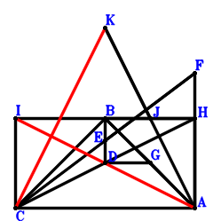
\(\because \) D is the midpoint of CH \(\therefore \small\overrightarrow{AD}=\dfrac{\small\overrightarrow{AC}}{2} + \dfrac{\small\overrightarrow{AH}}{2}\).\(\because \) E is the midpoint of BD \(\therefore \small\overrightarrow{AE}=\dfrac{\small\overrightarrow{AB}}{2} + \dfrac{\small\overrightarrow{AD}}{2}=\dfrac{\small\overrightarrow{AB}}{2} + \dfrac{\small\overrightarrow{AC}}{4} + \dfrac{\small\overrightarrow{AH}}{4}\).\(\because \) E is the midpoint of CF \(\therefore \small\overrightarrow{AF}=- \small\overrightarrow{AC} + 2 \small\overrightarrow{AE}=\small\overrightarrow{AB} - \dfrac{\small\overrightarrow{AC}}{2} + \dfrac{\small\overrightarrow{AH}}{2}\).\(\because \) G is the midpoint of BA \(\therefore \small\overrightarrow{AG}=\dfrac{\small\overrightarrow{AB}}{2}\).\(\because \) ICAH is a parallelogram \(\therefore \small\overrightarrow{AI}=\small\overrightarrow{AC} + \small\overrightarrow{AH}\).\(\because \) J is the midpoint of BH \(\therefore \small\overrightarrow{AJ}=\dfrac{\small\overrightarrow{AB}}{2} + \dfrac{\small\overrightarrow{AH}}{2}\).\(\because \) J is the midpoint of KA \(\therefore \small\overrightarrow{AK}=2 \small\overrightarrow{AJ}=\small\overrightarrow{AB} + \small\overrightarrow{AH}\).\(\because \) CB⊥BA \(\therefore \small\overrightarrow{AB} \cdot \small\overrightarrow{CB}=\small\overrightarrow{AB} \cdot \left(\small\overrightarrow{AB} - \small\overrightarrow{AC}\right)=\small\overrightarrow{AB}^{2} - \small\overrightarrow{AB} \cdot \small\overrightarrow{AC}=0\) . . . . . . \(①\)\(\because \) FA⊥DG \(\therefore \small\overrightarrow{AF} \cdot \small\overrightarrow{GD}=\small\overrightarrow{AF} \cdot \left(\small\overrightarrow{AD} - \small\overrightarrow{AG}\right)=\left(- \dfrac{\small\overrightarrow{AB}}{2} + \dfrac{\small\overrightarrow{AC}}{2} + \dfrac{\small\overrightarrow{AH}}{2}\right) \cdot \left(\small\overrightarrow{AB} - \dfrac{\small\overrightarrow{AC}}{2} + \dfrac{\small\overrightarrow{AH}}{2}\right)=- \dfrac{\small\overrightarrow{AB}^{2}}{2} + \dfrac{3 \small\overrightarrow{AB} \cdot \small\overrightarrow{AC}}{4} + \dfrac{\small\overrightarrow{AB} \cdot \small\overrightarrow{AH}}{4} - \dfrac{\small\overrightarrow{AC}^{2}}{4} + \dfrac{\small\overrightarrow{AH}^{2}}{4}=0\) . . . . . . \(②\)In conclusion, \(\small\overrightarrow{AI} \cdot \small\overrightarrow{KC}=\small\overrightarrow{AI} \cdot \left(\small\overrightarrow{AC} - \small\overrightarrow{AK}\right)=\left(\small\overrightarrow{AC} + \small\overrightarrow{AH}\right) \cdot \left(- \small\overrightarrow{AB} + \small\overrightarrow{AC} - \small\overrightarrow{AH}\right)=- \small\overrightarrow{AB} \cdot \small\overrightarrow{AC} - \small\overrightarrow{AB} \cdot \small\overrightarrow{AH} + \small\overrightarrow{AC}^{2} - \small\overrightarrow{AH}^{2}=-2\cdot①-4\cdot②=0\), that is, IA⊥CK.
Exercise 17202： Let CBGH and CBHJ be parallelograms. BIHA is a trapezoid with IH//BA and IH=2BA. C, E, H are collinear and CE=2EH. F, E, D are collinear and 2FD=3FE. D is the midpoint of HA. FA⊥AG and CB⊥BA. Prove that IC⊥JA.
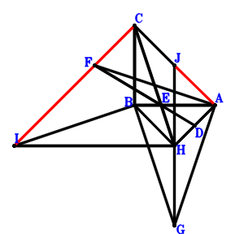
\(\because \) D is the midpoint of HA \(\therefore \small\overrightarrow{AD}=\dfrac{\small\overrightarrow{AH}}{2}\).\(\because \) C, E, H are collinear and CE=2EH \(\therefore \small\overrightarrow{AE}=\dfrac{\small\overrightarrow{AC}}{3} + \dfrac{2 \small\overrightarrow{AH}}{3}\).\(\because \) F, E, D are collinear and 2FD=3FE \(\therefore \small\overrightarrow{AF}=3 \small\overrightarrow{AE} - \small\overrightarrow{AH}=\small\overrightarrow{AC} + \small\overrightarrow{AH}\).\(\because \) CBGH is a parallelogram \(\therefore \small\overrightarrow{AG}=\small\overrightarrow{AB} - \small\overrightarrow{AC} + \small\overrightarrow{AH}\).\(\because \) IH//BA and IH=2BA \(\therefore \small\overrightarrow{AI}=2 \small\overrightarrow{AB} + \small\overrightarrow{AH}\).\(\because \) CBHJ is a parallelogram \(\therefore \small\overrightarrow{AJ}=- \small\overrightarrow{AB} + \small\overrightarrow{AC} + \small\overrightarrow{AH}\).\(\because \) CB⊥BA \(\therefore \small\overrightarrow{AB} \cdot \small\overrightarrow{CB}=\small\overrightarrow{AB} \cdot \left(\small\overrightarrow{AB} - \small\overrightarrow{AC}\right)=\small\overrightarrow{AB}^{2} - \small\overrightarrow{AB} \cdot \small\overrightarrow{AC}=0\) . . . . . . \(①\)\(\because \) FA⊥AG \(\therefore - \small\overrightarrow{AF} \cdot \small\overrightarrow{AG}=- \left(\small\overrightarrow{AC} + \small\overrightarrow{AH}\right) \cdot \left(\small\overrightarrow{AB} - \small\overrightarrow{AC} + \small\overrightarrow{AH}\right)=- \small\overrightarrow{AB} \cdot \small\overrightarrow{AC} - \small\overrightarrow{AB} \cdot \small\overrightarrow{AH} + \small\overrightarrow{AC}^{2} - \small\overrightarrow{AH}^{2}=0\) . . . . . . \(②\)In conclusion, \(\small\overrightarrow{AJ} \cdot \small\overrightarrow{CI}=\small\overrightarrow{AJ} \cdot \left(- \small\overrightarrow{AC} + \small\overrightarrow{AI}\right)=\left(- \small\overrightarrow{AB} + \small\overrightarrow{AC} + \small\overrightarrow{AH}\right) \cdot \left(2 \small\overrightarrow{AB} - \small\overrightarrow{AC} + \small\overrightarrow{AH}\right)=- 2 \small\overrightarrow{AB}^{2} + 3 \small\overrightarrow{AB} \cdot \small\overrightarrow{AC} + \small\overrightarrow{AB} \cdot \small\overrightarrow{AH} - \small\overrightarrow{AC}^{2} + \small\overrightarrow{AH}^{2}=-2\cdot①-②=0\), that is, IC⊥JA.
Exercise 17333： Let DABE be a parallelogram. IHAD is a trapezoid with HA//ID and HA=2ID. G, J, K, F, D are the midpoints of HA, HB, AC, AB, HC, respectively. AB⊥BC. Given that CE//DF and GI//JK, prove that \(CE·DF=GI·JK\).
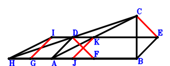
\(\because \) D is the midpoint of HC \(\therefore \small\overrightarrow{AD}=\dfrac{\small\overrightarrow{AC}}{2} + \dfrac{\small\overrightarrow{AH}}{2}\).\(\because \) DABE is a parallelogram \(\therefore \small\overrightarrow{AE}=\small\overrightarrow{AB} + \dfrac{\small\overrightarrow{AC}}{2} + \dfrac{\small\overrightarrow{AH}}{2}\).\(\because \) F is the midpoint of AB \(\therefore \small\overrightarrow{AF}=\dfrac{\small\overrightarrow{AB}}{2}\).\(\because \) G is the midpoint of HA \(\therefore \small\overrightarrow{AG}=\dfrac{\small\overrightarrow{AH}}{2}\).\(\because \) HA//ID and HA=2ID \(\therefore \small\overrightarrow{AI}=\dfrac{\small\overrightarrow{AC}}{2} + \small\overrightarrow{AH}\).\(\because \) J is the midpoint of HB \(\therefore \small\overrightarrow{AJ}=\dfrac{\small\overrightarrow{AB}}{2} + \dfrac{\small\overrightarrow{AH}}{2}\).\(\because \) K is the midpoint of AC \(\therefore \small\overrightarrow{AK}=\dfrac{\small\overrightarrow{AC}}{2}\).\(\because \) AB⊥BC \( \therefore\small\overrightarrow{AB} \cdot \small\overrightarrow{CB}=\small\overrightarrow{AB} \cdot \left(\small\overrightarrow{AB} - \small\overrightarrow{AC}\right)=\small\overrightarrow{AB}^{2} - \small\overrightarrow{AB} \cdot \small\overrightarrow{AC}=0.\)In conclusion, \(\small\overrightarrow{CE} \cdot \small\overrightarrow{FD} + \small\overrightarrow{GI} \cdot \small\overrightarrow{JK}=\left(- \small\overrightarrow{AC} + \small\overrightarrow{AE}\right) \cdot \left(\small\overrightarrow{AD} - \small\overrightarrow{AF}\right) + \left(- \small\overrightarrow{AG} + \small\overrightarrow{AI}\right) \cdot \left(- \small\overrightarrow{AJ} + \small\overrightarrow{AK}\right)=\left(\dfrac{\small\overrightarrow{AC}}{2} + \dfrac{\small\overrightarrow{AH}}{2}\right) \cdot \left(- \dfrac{\small\overrightarrow{AB}}{2} + \dfrac{\small\overrightarrow{AC}}{2} - \dfrac{\small\overrightarrow{AH}}{2}\right) + \left(- \dfrac{\small\overrightarrow{AB}}{2} + \dfrac{\small\overrightarrow{AC}}{2} + \dfrac{\small\overrightarrow{AH}}{2}\right) \cdot \left(\small\overrightarrow{AB} - \dfrac{\small\overrightarrow{AC}}{2} + \dfrac{\small\overrightarrow{AH}}{2}\right)=- \dfrac{\small\overrightarrow{AB}^{2}}{2} + \dfrac{\small\overrightarrow{AB} \cdot \small\overrightarrow{AC}}{2}=0\)\(\because\) CE//DF and GI//JK \(\therefore\) \(CE·DF=GI·JK\).
Exercise 18667： Let BDAH be a parallelogram. HCEA is a trapezoid with CH//EA and CH=2EA. HCAI is a trapezoid with CH//AI and CH=2AI. F is the midpoint of CG and BH. CD⊥BE and CB⊥BA. Prove that AG⊥HI.
Exercise 19683： Let DHBC and HJBC be parallelograms. HGFA is a trapezoid with HA//GF and HA=2GF. HCEA is a trapezoid with HC//AE and HC=2AE. F, G are the midpoints of HC, IA, respectively. DA⊥BE. Given that A, C, B are collinear and IH//JA, prove that \(IH·JA=2·AB·CB\).
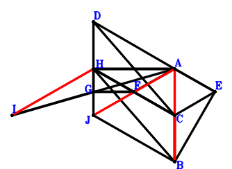
\(\because \) DHBC is a parallelogram \(\therefore \small\overrightarrow{AD}=- \small\overrightarrow{AB} + \small\overrightarrow{AC} + \small\overrightarrow{AH}\).\(\because \) HC//AE and HC=2AE \(\therefore \small\overrightarrow{AE}=\dfrac{\small\overrightarrow{AC}}{2} - \dfrac{\small\overrightarrow{AH}}{2}\).\(\because \) F is the midpoint of HC \(\therefore \small\overrightarrow{AF}=\dfrac{\small\overrightarrow{AC}}{2} + \dfrac{\small\overrightarrow{AH}}{2}\).\(\because \) HA//GF and HA=2GF \(\therefore \small\overrightarrow{AG}=\dfrac{\small\overrightarrow{AC}}{2} + \small\overrightarrow{AH}\).\(\because \) G is the midpoint of IA \(\therefore \small\overrightarrow{AI}=2 \small\overrightarrow{AG}=\small\overrightarrow{AC} + 2 \small\overrightarrow{AH}\).\(\because \) HJBC is a parallelogram \(\therefore \small\overrightarrow{AJ}=\small\overrightarrow{AB} - \small\overrightarrow{AC} + \small\overrightarrow{AH}\).\(\because \) DA⊥BE \( \therefore\small\overrightarrow{AD} \cdot \small\overrightarrow{EB}=\small\overrightarrow{AD} \cdot \left(\small\overrightarrow{AB} - \small\overrightarrow{AE}\right)=\left(- \small\overrightarrow{AB} + \small\overrightarrow{AC} + \small\overrightarrow{AH}\right) \cdot \left(\small\overrightarrow{AB} - \dfrac{\small\overrightarrow{AC}}{2} + \dfrac{\small\overrightarrow{AH}}{2}\right)=- \small\overrightarrow{AB}^{2} + \dfrac{3 \small\overrightarrow{AB} \cdot \small\overrightarrow{AC}}{2} + \dfrac{\small\overrightarrow{AB} \cdot \small\overrightarrow{AH}}{2} - \dfrac{\small\overrightarrow{AC}^{2}}{2} + \dfrac{\small\overrightarrow{AH}^{2}}{2}=0.\)In conclusion, \(2 \small\overrightarrow{AB} \cdot \small\overrightarrow{CB} + \small\overrightarrow{HI} \cdot \small\overrightarrow{JA}=2 \small\overrightarrow{AB} \cdot \left(\small\overrightarrow{AB} - \small\overrightarrow{AC}\right) - \small\overrightarrow{AJ} \cdot \left(- \small\overrightarrow{AH} + \small\overrightarrow{AI}\right)=2 \small\overrightarrow{AB} \cdot \left(\small\overrightarrow{AB} - \small\overrightarrow{AC}\right) - \left(\small\overrightarrow{AC} + \small\overrightarrow{AH}\right) \cdot \left(\small\overrightarrow{AB} - \small\overrightarrow{AC} + \small\overrightarrow{AH}\right)=2 \small\overrightarrow{AB}^{2} - 3 \small\overrightarrow{AB} \cdot \small\overrightarrow{AC} - \small\overrightarrow{AB} \cdot \small\overrightarrow{AH} + \small\overrightarrow{AC}^{2} - \small\overrightarrow{AH}^{2}=0\)\(\because\) A, C, B are collinear and IH//JA \(\therefore\) \(IH·JA=2·AB·CB\).
Exercise 19880： Let ICBA be a rectangle. HKDJ is a trapezoid with KH//DJ and KH=2DJ. D, J, G are the midpoints of CH, HA, AB, respectively. E is the midpoint of DB and CF. AF⊥DG. Prove that IH⊥KA.
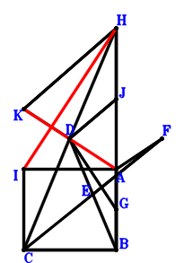
\(\because \) D is the midpoint of CH \(\therefore \small\overrightarrow{AD}=\dfrac{\small\overrightarrow{AC}}{2} + \dfrac{\small\overrightarrow{AH}}{2}\).\(\because \) E is the midpoint of DB \(\therefore \small\overrightarrow{AE}=\dfrac{\small\overrightarrow{AB}}{2} + \dfrac{\small\overrightarrow{AD}}{2}=\dfrac{\small\overrightarrow{AB}}{2} + \dfrac{\small\overrightarrow{AC}}{4} + \dfrac{\small\overrightarrow{AH}}{4}\).\(\because \) E is the midpoint of CF \(\therefore \small\overrightarrow{AF}=- \small\overrightarrow{AC} + 2 \small\overrightarrow{AE}=\small\overrightarrow{AB} - \dfrac{\small\overrightarrow{AC}}{2} + \dfrac{\small\overrightarrow{AH}}{2}\).\(\because \) G is the midpoint of AB \(\therefore \small\overrightarrow{AG}=\dfrac{\small\overrightarrow{AB}}{2}\).\(\because \) ICBA is a parallelogram \(\therefore \small\overrightarrow{AI}=- \small\overrightarrow{AB} + \small\overrightarrow{AC}\).\(\because \) J is the midpoint of HA \(\therefore \small\overrightarrow{AJ}=\dfrac{\small\overrightarrow{AH}}{2}\).\(\because \) KH//DJ and KH=2DJ \(\therefore \small\overrightarrow{AK}=2 \small\overrightarrow{AD}=\small\overrightarrow{AC} + \small\overrightarrow{AH}\).\(\because \) CB⊥BA \(\therefore \small\overrightarrow{AB} \cdot \small\overrightarrow{CB}=\small\overrightarrow{AB} \cdot \left(\small\overrightarrow{AB} - \small\overrightarrow{AC}\right)=\small\overrightarrow{AB}^{2} - \small\overrightarrow{AB} \cdot \small\overrightarrow{AC}=0\) . . . . . . \(①\)\(\because \) AF⊥DG \(\therefore \small\overrightarrow{AF} \cdot \small\overrightarrow{GD}=\small\overrightarrow{AF} \cdot \left(\small\overrightarrow{AD} - \small\overrightarrow{AG}\right)=\left(- \dfrac{\small\overrightarrow{AB}}{2} + \dfrac{\small\overrightarrow{AC}}{2} + \dfrac{\small\overrightarrow{AH}}{2}\right) \cdot \left(\small\overrightarrow{AB} - \dfrac{\small\overrightarrow{AC}}{2} + \dfrac{\small\overrightarrow{AH}}{2}\right)=- \dfrac{\small\overrightarrow{AB}^{2}}{2} + \dfrac{3 \small\overrightarrow{AB} \cdot \small\overrightarrow{AC}}{4} + \dfrac{\small\overrightarrow{AB} \cdot \small\overrightarrow{AH}}{4} - \dfrac{\small\overrightarrow{AC}^{2}}{4} + \dfrac{\small\overrightarrow{AH}^{2}}{4}=0\) . . . . . . \(②\)In conclusion, \(\small\overrightarrow{AK} \cdot \small\overrightarrow{HI}=\small\overrightarrow{AK} \cdot \left(- \small\overrightarrow{AH} + \small\overrightarrow{AI}\right)=\left(\small\overrightarrow{AC} + \small\overrightarrow{AH}\right) \cdot \left(- \small\overrightarrow{AB} + \small\overrightarrow{AC} - \small\overrightarrow{AH}\right)=- \small\overrightarrow{AB} \cdot \small\overrightarrow{AC} - \small\overrightarrow{AB} \cdot \small\overrightarrow{AH} + \small\overrightarrow{AC}^{2} - \small\overrightarrow{AH}^{2}=-2\cdot①-4\cdot②=0\), that is, IH⊥KA.
Exercise 20570： Let CJKB, CEHD and CIHA be parallelograms. J, A are the midpoints of HC, HD, respectively. F is the midpoint of AC and GB. AB⊥BC and EH⊥HG. Prove that IB⊥KA.
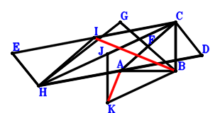
\(\because \) A is the midpoint of HD \(\therefore \small\overrightarrow{CD}=2 \small\overrightarrow{CA} - \small\overrightarrow{CH}\).\(\because \) CEHD is a parallelogram \(\therefore \small\overrightarrow{CE}=- \small\overrightarrow{CD} + \small\overrightarrow{CH}=- 2 \small\overrightarrow{CA} + 2 \small\overrightarrow{CH}\).\(\because \) F is the midpoint of AC \(\therefore \small\overrightarrow{CF}=\dfrac{\small\overrightarrow{CA}}{2}\).\(\because \) F is the midpoint of GB \(\therefore \small\overrightarrow{CG}=- \small\overrightarrow{CB} + 2 \small\overrightarrow{CF}=\small\overrightarrow{CA} - \small\overrightarrow{CB}\).\(\because \) CIHA is a parallelogram \(\therefore \small\overrightarrow{CI}=- \small\overrightarrow{CA} + \small\overrightarrow{CH}\).\(\because \) J is the midpoint of HC \(\therefore \small\overrightarrow{CJ}=\dfrac{\small\overrightarrow{CH}}{2}\).\(\because \) CJKB is a parallelogram \(\therefore \small\overrightarrow{CK}=\small\overrightarrow{CB} + \dfrac{\small\overrightarrow{CH}}{2}\).\(\because \) AB⊥BC \(\therefore \small\overrightarrow{AB} \cdot \small\overrightarrow{CB}=\small\overrightarrow{CB} \cdot \left(- \small\overrightarrow{CA} + \small\overrightarrow{CB}\right)=- \small\overrightarrow{CA} \cdot \small\overrightarrow{CB} + \small\overrightarrow{CB}^{2}=0\) . . . . . . \(①\)\(\because \) EH⊥HG \(\therefore \small\overrightarrow{HE} \cdot \small\overrightarrow{HG}=\left(\small\overrightarrow{CE} - \small\overrightarrow{CH}\right) \cdot \left(\small\overrightarrow{CG} - \small\overrightarrow{CH}\right)=\left(- 2 \small\overrightarrow{CA} + \small\overrightarrow{CH}\right) \cdot \left(\small\overrightarrow{CA} - \small\overrightarrow{CB} - \small\overrightarrow{CH}\right)=- 2 \small\overrightarrow{CA}^{2} + 2 \small\overrightarrow{CA} \cdot \small\overrightarrow{CB} + 3 \small\overrightarrow{CA} \cdot \small\overrightarrow{CH} - \small\overrightarrow{CB} \cdot \small\overrightarrow{CH} - \small\overrightarrow{CH}^{2}=0\) . . . . . . \(②\)In conclusion, \(\small\overrightarrow{AK} \cdot \small\overrightarrow{BI}=\left(- \small\overrightarrow{CA} + \small\overrightarrow{CK}\right) \cdot \left(- \small\overrightarrow{CB} + \small\overrightarrow{CI}\right)=\left(- \small\overrightarrow{CA} - \small\overrightarrow{CB} + \small\overrightarrow{CH}\right) \cdot \left(- \small\overrightarrow{CA} + \small\overrightarrow{CB} + \dfrac{\small\overrightarrow{CH}}{2}\right)=\small\overrightarrow{CA}^{2} - \dfrac{3 \small\overrightarrow{CA} \cdot \small\overrightarrow{CH}}{2} - \small\overrightarrow{CB}^{2} + \dfrac{\small\overrightarrow{CB} \cdot \small\overrightarrow{CH}}{2} + \dfrac{\small\overrightarrow{CH}^{2}}{2}=-①-1/2\cdot②=0\), that is, IB⊥KA.
Exercise 21222： Let EABC be a rectangle. CADB be parallelograms. JHAF is a trapezoid with HA//JF and HA=2JF. F, I are the midpoints of HC, HA, respectively. G is the midpoint of AC and EB. Given that HD//EF and HE//IJ, prove that \(EF·HD=HE·IJ\).
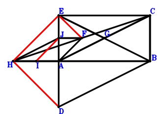
\(\because \) CADB is a parallelogram \(\therefore \small\overrightarrow{AD}=\small\overrightarrow{AB} - \small\overrightarrow{AC}\).\(\because \) EABC is a parallelogram \(\therefore \small\overrightarrow{AE}=- \small\overrightarrow{AB} + \small\overrightarrow{AC}\).\(\because \) F is the midpoint of HC \(\therefore \small\overrightarrow{AF}=\dfrac{\small\overrightarrow{AC}}{2} + \dfrac{\small\overrightarrow{AH}}{2}\).\(\because \) G is the midpoint of AC \(\therefore \small\overrightarrow{AG}=\dfrac{\small\overrightarrow{AC}}{2}\).\(\because \) G is the midpoint of EB \(\therefore \small\overrightarrow{AI}=\dfrac{\small\overrightarrow{AH}}{2}\).\(\because \) I is the midpoint of HA \(\therefore \small\overrightarrow{AJ}=\dfrac{\small\overrightarrow{AC}}{2} + \small\overrightarrow{AH}\).\(\because \) HA//JF and HA=2JF \( \therefore\small\overrightarrow{AB} \cdot \small\overrightarrow{CB}=\small\overrightarrow{AB} \cdot \left(\small\overrightarrow{AB} - \small\overrightarrow{AC}\right)=\small\overrightarrow{AB}^{2} - \small\overrightarrow{AB} \cdot \small\overrightarrow{AC}=0.\)In conclusion, \(\small\overrightarrow{DH} \cdot \small\overrightarrow{EF} + \small\overrightarrow{HE} \cdot \small\overrightarrow{IJ}=\left(- \small\overrightarrow{AD} + \small\overrightarrow{AH}\right) \cdot \left(- \small\overrightarrow{AE} + \small\overrightarrow{AF}\right) + \left(\small\overrightarrow{AE} - \small\overrightarrow{AH}\right) \cdot \left(- \small\overrightarrow{AI} + \small\overrightarrow{AJ}\right)=\left(\dfrac{\small\overrightarrow{AC}}{2} + \dfrac{\small\overrightarrow{AH}}{2}\right) \cdot \left(- \small\overrightarrow{AB} + \small\overrightarrow{AC} - \small\overrightarrow{AH}\right) + \left(- \small\overrightarrow{AB} + \small\overrightarrow{AC} + \small\overrightarrow{AH}\right) \cdot \left(\small\overrightarrow{AB} - \dfrac{\small\overrightarrow{AC}}{2} + \dfrac{\small\overrightarrow{AH}}{2}\right)=- \small\overrightarrow{AB}^{2} + \small\overrightarrow{AB} \cdot \small\overrightarrow{AC}=0\)\(\because\) HD//EF and HE//IJ \(\therefore\) \(EF·HD=HE·IJ\).
Exercise 21580： Let AHBG be a parallelogram. J, K, I are the midpoints of HC, JB, AC, respectively. D is the midpoint of AE,CF and HB. HC⊥CE, AB⊥BC and HA⊥AF. Prove that CG⊥IK.
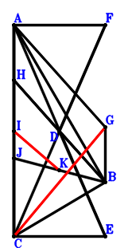
\(\because \) D is the midpoint of HB \(\therefore \small\overrightarrow{CD}=\dfrac{\small\overrightarrow{CB}}{2} + \dfrac{\small\overrightarrow{CH}}{2}\).\(\because \) D is the midpoint of AE \(\therefore \small\overrightarrow{CE}=- \small\overrightarrow{CA} + 2 \small\overrightarrow{CD}=- \small\overrightarrow{CA} + \small\overrightarrow{CB} + \small\overrightarrow{CH}\).\(\because \) D is the midpoint of CF \(\therefore \small\overrightarrow{CF}=2 \small\overrightarrow{CD}=\small\overrightarrow{CB} + \small\overrightarrow{CH}\).\(\because \) AHBG is a parallelogram \(\therefore \small\overrightarrow{CG}=\small\overrightarrow{CA} + \small\overrightarrow{CB} - \small\overrightarrow{CH}\).\(\because \) I is the midpoint of AC \(\therefore \small\overrightarrow{CI}=\dfrac{\small\overrightarrow{CA}}{2}\).\(\because \) J is the midpoint of HC \(\therefore \small\overrightarrow{CJ}=\dfrac{\small\overrightarrow{CH}}{2}\).\(\because \) K is the midpoint of JB \(\therefore \small\overrightarrow{CK}=\dfrac{\small\overrightarrow{CB}}{2} + \dfrac{\small\overrightarrow{CJ}}{2}=\dfrac{\small\overrightarrow{CB}}{2} + \dfrac{\small\overrightarrow{CH}}{4}\).\(\because \) AB⊥BC \(\therefore \small\overrightarrow{AB} \cdot \small\overrightarrow{CB}=\small\overrightarrow{CB} \cdot \left(- \small\overrightarrow{CA} + \small\overrightarrow{CB}\right)=- \small\overrightarrow{CA} \cdot \small\overrightarrow{CB} + \small\overrightarrow{CB}^{2}=0\) . . . . . . \(①\)\(\because \) HC⊥CE \(\therefore \small\overrightarrow{CE} \cdot \small\overrightarrow{CH}=\small\overrightarrow{CH} \cdot \left(- \small\overrightarrow{CA} + \small\overrightarrow{CB} + \small\overrightarrow{CH}\right)=- \small\overrightarrow{CA} \cdot \small\overrightarrow{CH} + \small\overrightarrow{CB} \cdot \small\overrightarrow{CH} + \small\overrightarrow{CH}^{2}=0\) . . . . . . \(②\)\(\because \) HA⊥AF \(\therefore \small\overrightarrow{FA} \cdot \small\overrightarrow{HA}=\left(\small\overrightarrow{CA} - \small\overrightarrow{CF}\right) \cdot \left(\small\overrightarrow{CA} - \small\overrightarrow{CH}\right)=\left(\small\overrightarrow{CA} - \small\overrightarrow{CH}\right) \cdot \left(\small\overrightarrow{CA} - \small\overrightarrow{CB} - \small\overrightarrow{CH}\right)=\small\overrightarrow{CA}^{2} - \small\overrightarrow{CA} \cdot \small\overrightarrow{CB} - 2 \small\overrightarrow{CA} \cdot \small\overrightarrow{CH} + \small\overrightarrow{CB} \cdot \small\overrightarrow{CH} + \small\overrightarrow{CH}^{2}=0\) . . . . . . \(③\)In conclusion, \(\small\overrightarrow{GC} \cdot \small\overrightarrow{IK}=- \small\overrightarrow{CG} \cdot \left(- \small\overrightarrow{CI} + \small\overrightarrow{CK}\right)=- \left(- \dfrac{\small\overrightarrow{CA}}{2} + \dfrac{\small\overrightarrow{CB}}{2} + \dfrac{\small\overrightarrow{CH}}{4}\right) \cdot \left(\small\overrightarrow{CA} + \small\overrightarrow{CB} - \small\overrightarrow{CH}\right)=\dfrac{\small\overrightarrow{CA}^{2}}{2} - \dfrac{3 \small\overrightarrow{CA} \cdot \small\overrightarrow{CH}}{4} - \dfrac{\small\overrightarrow{CB}^{2}}{2} + \dfrac{\small\overrightarrow{CB} \cdot \small\overrightarrow{CH}}{4} + \dfrac{\small\overrightarrow{CH}^{2}}{4}=-1/2\cdot①-1/4\cdot②+1/2\cdot③=0\), that is, CG⊥IK.
Exercise 22135： Let ICAG and HBCD be parallelograms. EBCH is a trapezoid with EH//BC and EH=2BC. H, F are the midpoints of GA, EC, respectively. J is the midpoint of KC and BH. FA⊥AD. Given that B, C, A are collinear and IH//KA, prove that \(IH·KA=2·BA·BC\).
\(\because \) HBCD is a parallelogram \(\therefore \small\overrightarrow{AD}=- \small\overrightarrow{AB} + \small\overrightarrow{AC} + \small\overrightarrow{AH}\).\(\because \) EH//BC and EH=2BC \(\therefore \small\overrightarrow{AE}=2 \small\overrightarrow{AB} - 2 \small\overrightarrow{AC} + \small\overrightarrow{AH}\).\(\because \) F is the midpoint of EC \(\therefore \small\overrightarrow{AF}=\dfrac{\small\overrightarrow{AC}}{2} + \dfrac{\small\overrightarrow{AE}}{2}=\small\overrightarrow{AB} - \dfrac{\small\overrightarrow{AC}}{2} + \dfrac{\small\overrightarrow{AH}}{2}\).\(\because \) H is the midpoint of GA \(\therefore \small\overrightarrow{AG}=2 \small\overrightarrow{AH}\).\(\because \) ICAG is a parallelogram \(\therefore \small\overrightarrow{AI}=\small\overrightarrow{AC} + 2 \small\overrightarrow{AH}\).\(\because \) J is the midpoint of BH \(\therefore \small\overrightarrow{AJ}=\dfrac{\small\overrightarrow{AB}}{2} + \dfrac{\small\overrightarrow{AH}}{2}\).\(\because \) J is the midpoint of KC \(\therefore \small\overrightarrow{AK}=- \small\overrightarrow{AC} + 2 \small\overrightarrow{AJ}=\small\overrightarrow{AB} - \small\overrightarrow{AC} + \small\overrightarrow{AH}\).\(\because \) FA⊥AD \( \therefore\small\overrightarrow{AD} \cdot \small\overrightarrow{AF}=\left(- \small\overrightarrow{AB} + \small\overrightarrow{AC} + \small\overrightarrow{AH}\right) \cdot \left(\small\overrightarrow{AB} - \dfrac{\small\overrightarrow{AC}}{2} + \dfrac{\small\overrightarrow{AH}}{2}\right)=- \small\overrightarrow{AB}^{2} + \dfrac{3 \small\overrightarrow{AB} \cdot \small\overrightarrow{AC}}{2} + \dfrac{\small\overrightarrow{AB} \cdot \small\overrightarrow{AH}}{2} - \dfrac{\small\overrightarrow{AC}^{2}}{2} + \dfrac{\small\overrightarrow{AH}^{2}}{2}=0.\)In conclusion, \(2 \small\overrightarrow{AB} \cdot \small\overrightarrow{CB} + \small\overrightarrow{HI} \cdot \small\overrightarrow{KA}=2 \small\overrightarrow{AB} \cdot \left(\small\overrightarrow{AB} - \small\overrightarrow{AC}\right) - \small\overrightarrow{AK} \cdot \left(- \small\overrightarrow{AH} + \small\overrightarrow{AI}\right)=2 \small\overrightarrow{AB} \cdot \left(\small\overrightarrow{AB} - \small\overrightarrow{AC}\right) - \left(\small\overrightarrow{AC} + \small\overrightarrow{AH}\right) \cdot \left(\small\overrightarrow{AB} - \small\overrightarrow{AC} + \small\overrightarrow{AH}\right)=2 \small\overrightarrow{AB}^{2} - 3 \small\overrightarrow{AB} \cdot \small\overrightarrow{AC} - \small\overrightarrow{AB} \cdot \small\overrightarrow{AH} + \small\overrightarrow{AC}^{2} - \small\overrightarrow{AH}^{2}=0\)\(\because\) B, C, A are collinear and IH//KA \(\therefore\) \(IH·KA=2·BA·BC\).
Exercise 22584： Let JBCH, EBCD, HACG and IHAG be parallelograms. F, D are the midpoints of AB, HC, respectively. EA⊥FD and AB⊥BC. Prove that HI⊥JA.
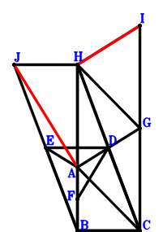
\(\because \) D is the midpoint of HC \(\therefore \small\overrightarrow{AD}=\dfrac{\small\overrightarrow{AC}}{2} + \dfrac{\small\overrightarrow{AH}}{2}\).\(\because \) EBCD is a parallelogram \(\therefore \small\overrightarrow{AE}=\small\overrightarrow{AB} - \dfrac{\small\overrightarrow{AC}}{2} + \dfrac{\small\overrightarrow{AH}}{2}\).\(\because \) F is the midpoint of AB \(\therefore \small\overrightarrow{AF}=\dfrac{\small\overrightarrow{AB}}{2}\).\(\because \) HACG is a parallelogram \(\therefore \small\overrightarrow{AG}=\small\overrightarrow{AC} + \small\overrightarrow{AH}\).\(\because \) IHAG is a parallelogram \(\therefore \small\overrightarrow{AI}=\small\overrightarrow{AC} + 2 \small\overrightarrow{AH}\).\(\because \) JBCH is a parallelogram \(\therefore \small\overrightarrow{AJ}=\small\overrightarrow{AB} - \small\overrightarrow{AC} + \small\overrightarrow{AH}\).\(\because \) AB⊥BC \(\therefore \small\overrightarrow{AB} \cdot \small\overrightarrow{CB}=\small\overrightarrow{AB} \cdot \left(\small\overrightarrow{AB} - \small\overrightarrow{AC}\right)=\small\overrightarrow{AB}^{2} - \small\overrightarrow{AB} \cdot \small\overrightarrow{AC}=0\) . . . . . . \(①\)\(\because \) EA⊥FD \(\therefore \small\overrightarrow{AE} \cdot \small\overrightarrow{FD}=\small\overrightarrow{AE} \cdot \left(\small\overrightarrow{AD} - \small\overrightarrow{AF}\right)=\left(- \dfrac{\small\overrightarrow{AB}}{2} + \dfrac{\small\overrightarrow{AC}}{2} + \dfrac{\small\overrightarrow{AH}}{2}\right) \cdot \left(\small\overrightarrow{AB} - \dfrac{\small\overrightarrow{AC}}{2} + \dfrac{\small\overrightarrow{AH}}{2}\right)=- \dfrac{\small\overrightarrow{AB}^{2}}{2} + \dfrac{3 \small\overrightarrow{AB} \cdot \small\overrightarrow{AC}}{4} + \dfrac{\small\overrightarrow{AB} \cdot \small\overrightarrow{AH}}{4} - \dfrac{\small\overrightarrow{AC}^{2}}{4} + \dfrac{\small\overrightarrow{AH}^{2}}{4}=0\) . . . . . . \(②\)In conclusion, \(\small\overrightarrow{HI} \cdot \small\overrightarrow{JA}=- \small\overrightarrow{AJ} \cdot \left(- \small\overrightarrow{AH} + \small\overrightarrow{AI}\right)=- \left(\small\overrightarrow{AC} + \small\overrightarrow{AH}\right) \cdot \left(\small\overrightarrow{AB} - \small\overrightarrow{AC} + \small\overrightarrow{AH}\right)=- \small\overrightarrow{AB} \cdot \small\overrightarrow{AC} - \small\overrightarrow{AB} \cdot \small\overrightarrow{AH} + \small\overrightarrow{AC}^{2} - \small\overrightarrow{AH}^{2}=-2\cdot①-4\cdot②=0\), that is, HI⊥JA.
Exercise 22776： Let GCBH be parallelograms.CBAD is a rectangle. FBAH is a trapezoid with FH//BA and FH=2BA. E is the midpoint of BD and CA. DH⊥HA and CH⊥HD. Prove that FC⊥GA.
Exercise 23235： Let IAJC, HACG, EACH and DBCH be parallelograms. I, F are the midpoints of HC, EA, respectively. DA⊥FH. Given that J, B, G are collinear and A, B, C are collinear, prove that BG\(\cdot\)JB=AB\(\cdot\)BC.
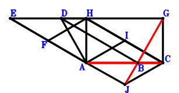
\(\because \) DBCH is a parallelogram \(\therefore \small\overrightarrow{CD}=\small\overrightarrow{CB} + \small\overrightarrow{CH}\).\(\because \) EACH is a parallelogram \(\therefore \small\overrightarrow{CE}=\small\overrightarrow{CA} + \small\overrightarrow{CH}\).\(\because \) F is the midpoint of EA \(\therefore \small\overrightarrow{CF}=\dfrac{\small\overrightarrow{CA}}{2} + \dfrac{\small\overrightarrow{CE}}{2}=\small\overrightarrow{CA} + \dfrac{\small\overrightarrow{CH}}{2}\).\(\because \) HACG is a parallelogram \(\therefore \small\overrightarrow{CG}=- \small\overrightarrow{CA} + \small\overrightarrow{CH}\).\(\because \) I is the midpoint of HC \(\therefore \small\overrightarrow{CI}=\dfrac{\small\overrightarrow{CH}}{2}\).\(\because \) IAJC is a parallelogram \(\therefore \small\overrightarrow{CJ}=\small\overrightarrow{CA} - \small\overrightarrow{CI}=\small\overrightarrow{CA} - \dfrac{\small\overrightarrow{CH}}{2}\).\(\because \) DA⊥FH \( \therefore\small\overrightarrow{DA} \cdot \small\overrightarrow{FH}=\left(\small\overrightarrow{CA} - \small\overrightarrow{CD}\right) \cdot \left(- \small\overrightarrow{CF} + \small\overrightarrow{CH}\right)=\left(- \small\overrightarrow{CA} + \dfrac{\small\overrightarrow{CH}}{2}\right) \cdot \left(\small\overrightarrow{CA} - \small\overrightarrow{CB} - \small\overrightarrow{CH}\right)=- \small\overrightarrow{CA}^{2} + \small\overrightarrow{CA} \cdot \small\overrightarrow{CB} + \dfrac{3 \small\overrightarrow{CA} \cdot \small\overrightarrow{CH}}{2} - \dfrac{\small\overrightarrow{CB} \cdot \small\overrightarrow{CH}}{2} - \dfrac{\small\overrightarrow{CH}^{2}}{2}=0.\)In conclusion, \(\small\overrightarrow{AB} \cdot \small\overrightarrow{CB} + \small\overrightarrow{BG} \cdot \small\overrightarrow{JB}=\small\overrightarrow{CB} \cdot \left(- \small\overrightarrow{CA} + \small\overrightarrow{CB}\right) + \left(- \small\overrightarrow{CB} + \small\overrightarrow{CG}\right) \cdot \left(\small\overrightarrow{CB} - \small\overrightarrow{CJ}\right)=\small\overrightarrow{CB} \cdot \left(- \small\overrightarrow{CA} + \small\overrightarrow{CB}\right) + \left(- \small\overrightarrow{CA} - \small\overrightarrow{CB} + \small\overrightarrow{CH}\right) \cdot \left(- \small\overrightarrow{CA} + \small\overrightarrow{CB} + \dfrac{\small\overrightarrow{CH}}{2}\right)=\small\overrightarrow{CA}^{2} - \small\overrightarrow{CA} \cdot \small\overrightarrow{CB} - \dfrac{3 \small\overrightarrow{CA} \cdot \small\overrightarrow{CH}}{2} + \dfrac{\small\overrightarrow{CB} \cdot \small\overrightarrow{CH}}{2} + \dfrac{\small\overrightarrow{CH}^{2}}{2}=0\)\(\because\) J, B, G are collinear and A, B, C are collinear \(\therefore\) BG\(\cdot\)JB=AB\(\cdot\)BC.
Exercise 25007： Let DHAC be a parallelogram. IABC is a rectangle. GHAF is a trapezoid with HA//GF and HA=2GF. EABC is a trapezoid with EC//AB and EC=2AB. G, F are the midpoints of HD, HC, respectively. Given that DB//EH and AD//HI, prove that \(DB·EH=AD·HI\).
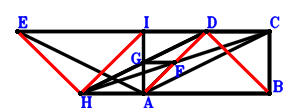
\(\because \) DHAC is a parallelogram \(\therefore \small\overrightarrow{AD}=\small\overrightarrow{AC} + \small\overrightarrow{AH}\).\(\because \) EC//AB and EC=2AB \(\therefore \small\overrightarrow{AE}=- 2 \small\overrightarrow{AB} + \small\overrightarrow{AC}\).\(\because \) F is the midpoint of HC \(\therefore \small\overrightarrow{AF}=\dfrac{\small\overrightarrow{AC}}{2} + \dfrac{\small\overrightarrow{AH}}{2}\).\(\because \) HA//GF and HA=2GF \(\therefore \small\overrightarrow{AG}=\dfrac{\small\overrightarrow{AC}}{2} + \small\overrightarrow{AH}\).\(\because \) G is the midpoint of HD \(\therefore \small\overrightarrow{AI}=- \small\overrightarrow{AB} + \small\overrightarrow{AC}\).\(\because \) IABC is a parallelogram \( \therefore\small\overrightarrow{AB} \cdot \small\overrightarrow{CB}=\small\overrightarrow{AB} \cdot \left(\small\overrightarrow{AB} - \small\overrightarrow{AC}\right)=\small\overrightarrow{AB}^{2} - \small\overrightarrow{AB} \cdot \small\overrightarrow{AC}=0.\)In conclusion, \(\small\overrightarrow{AD} \cdot \small\overrightarrow{HI} + \small\overrightarrow{BD} \cdot \small\overrightarrow{EH}=\small\overrightarrow{AD} \cdot \left(- \small\overrightarrow{AH} + \small\overrightarrow{AI}\right) + \left(- \small\overrightarrow{AB} + \small\overrightarrow{AD}\right) \cdot \left(- \small\overrightarrow{AE} + \small\overrightarrow{AH}\right)=\left(\small\overrightarrow{AC} + \small\overrightarrow{AH}\right) \cdot \left(- \small\overrightarrow{AB} + \small\overrightarrow{AC} - \small\overrightarrow{AH}\right) + \left(- \small\overrightarrow{AB} + \small\overrightarrow{AC} + \small\overrightarrow{AH}\right) \cdot \left(2 \small\overrightarrow{AB} - \small\overrightarrow{AC} + \small\overrightarrow{AH}\right)=- 2 \small\overrightarrow{AB}^{2} + 2 \small\overrightarrow{AB} \cdot \small\overrightarrow{AC}=0\)\(\because\) DB//EH and AD//HI \(\therefore\) \(DB·EH=AD·HI\).
Exercise 25039： Let FGCH and HBJA be parallelograms. IBAH is a trapezoid with IH//BA and IH=2BA. H is the midpoint of FA. D is the midpoint of EH and CA. EB⊥GA. Given that I, C, J are collinear and C, B, A are collinear, prove that IC\(\cdot\)CJ=2\(\cdot\)BA\(\cdot\)CB.
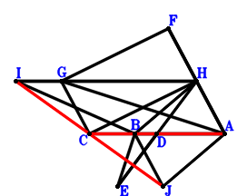
\(\because \) D is the midpoint of CA \(\therefore \small\overrightarrow{AD}=\dfrac{\small\overrightarrow{AC}}{2}\).\(\because \) D is the midpoint of EH \(\therefore \small\overrightarrow{AE}=2 \small\overrightarrow{AD} - \small\overrightarrow{AH}=\small\overrightarrow{AC} - \small\overrightarrow{AH}\).\(\because \) H is the midpoint of FA \(\therefore \small\overrightarrow{AF}=2 \small\overrightarrow{AH}\).\(\because \) FGCH is a parallelogram \(\therefore \small\overrightarrow{AG}=\small\overrightarrow{AC} + \small\overrightarrow{AH}\).\(\because \) IH//BA and IH=2BA \(\therefore \small\overrightarrow{AI}=2 \small\overrightarrow{AB} + \small\overrightarrow{AH}\).\(\because \) HBJA is a parallelogram \(\therefore \small\overrightarrow{AJ}=\small\overrightarrow{AB} - \small\overrightarrow{AH}\).\(\because \) EB⊥GA \( \therefore\small\overrightarrow{AG} \cdot \small\overrightarrow{BE}=\small\overrightarrow{AG} \cdot \left(- \small\overrightarrow{AB} + \small\overrightarrow{AE}\right)=\left(\small\overrightarrow{AC} + \small\overrightarrow{AH}\right) \cdot \left(- \small\overrightarrow{AB} + \small\overrightarrow{AC} - \small\overrightarrow{AH}\right)=- \small\overrightarrow{AB} \cdot \small\overrightarrow{AC} - \small\overrightarrow{AB} \cdot \small\overrightarrow{AH} + \small\overrightarrow{AC}^{2} - \small\overrightarrow{AH}^{2}=0.\)In conclusion, \(2 \small\overrightarrow{AB} \cdot \small\overrightarrow{CB} + \small\overrightarrow{CI} \cdot \small\overrightarrow{JC}=2 \small\overrightarrow{AB} \cdot \left(\small\overrightarrow{AB} - \small\overrightarrow{AC}\right) + \left(- \small\overrightarrow{AC} + \small\overrightarrow{AI}\right) \cdot \left(\small\overrightarrow{AC} - \small\overrightarrow{AJ}\right)=2 \small\overrightarrow{AB} \cdot \left(\small\overrightarrow{AB} - \small\overrightarrow{AC}\right) + \left(- \small\overrightarrow{AB} + \small\overrightarrow{AC} + \small\overrightarrow{AH}\right) \cdot \left(2 \small\overrightarrow{AB} - \small\overrightarrow{AC} + \small\overrightarrow{AH}\right)=\small\overrightarrow{AB} \cdot \small\overrightarrow{AC} + \small\overrightarrow{AB} \cdot \small\overrightarrow{AH} - \small\overrightarrow{AC}^{2} + \small\overrightarrow{AH}^{2}=0\)\(\because\) I, C, J are collinear and C, B, A are collinear \(\therefore\) IC\(\cdot\)CJ=2\(\cdot\)BA\(\cdot\)CB.
Exercise 25131： Let BCIH be parallelograms. BCFA is a rectangle. EDAH is a trapezoid with EH//DA and EH=2DA. GHAB is a trapezoid with GH//BA and GH=2BA. D is the midpoint of CH. EH⊥HF. Prove that GC⊥IA.
Exercise 25314： Let HCBG, ECFA and DCAH be parallelograms. DCFA is a cyclic quadrilateral, DF intersects CA at B. E is the midpoint of CH. I is the midpoint of DJ and HA. Prove that AG⊥HJ.
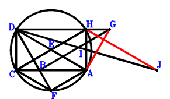
\(\because \) DCAH is a parallelogram \(\therefore \small\overrightarrow{AD}=\small\overrightarrow{AC} + \small\overrightarrow{AH}\).\(\because \) E is the midpoint of CH \(\therefore \small\overrightarrow{AE}=\dfrac{\small\overrightarrow{AC}}{2} + \dfrac{\small\overrightarrow{AH}}{2}\).\(\because \) ECFA is a parallelogram \(\therefore \small\overrightarrow{AF}=\small\overrightarrow{AC} - \small\overrightarrow{AE}=\dfrac{\small\overrightarrow{AC}}{2} - \dfrac{\small\overrightarrow{AH}}{2}\).\(\because \) HCBG is a parallelogram \(\therefore \small\overrightarrow{AG}=\small\overrightarrow{AB} - \small\overrightarrow{AC} + \small\overrightarrow{AH}\).\(\because \) I is the midpoint of HA \(\therefore \small\overrightarrow{AI}=\dfrac{\small\overrightarrow{AH}}{2}\).\(\because \) I is the midpoint of DJ \(\therefore \small\overrightarrow{AJ}=- \small\overrightarrow{AD} + \small\overrightarrow{AH}=- \small\overrightarrow{AC}\).\(\because \) DCFA is a cyclic quadrilateral, DF intersects CA at B \( \therefore\small\overrightarrow{AB} \cdot \small\overrightarrow{CB} + \small\overrightarrow{BD} \cdot \small\overrightarrow{FB}=\small\overrightarrow{AB} \cdot \left(\small\overrightarrow{AB} - \small\overrightarrow{AC}\right) + \left(- \small\overrightarrow{AB} + \small\overrightarrow{AD}\right) \cdot \left(\small\overrightarrow{AB} - \small\overrightarrow{AF}\right)=\small\overrightarrow{AB} \cdot \left(\small\overrightarrow{AB} - \small\overrightarrow{AC}\right) + \left(- \small\overrightarrow{AB} + \small\overrightarrow{AC} + \small\overrightarrow{AH}\right) \cdot \left(\small\overrightarrow{AB} - \dfrac{\small\overrightarrow{AC}}{2} + \dfrac{\small\overrightarrow{AH}}{2}\right)=\dfrac{\small\overrightarrow{AB} \cdot \small\overrightarrow{AC}}{2} + \dfrac{\small\overrightarrow{AB} \cdot \small\overrightarrow{AH}}{2} - \dfrac{\small\overrightarrow{AC}^{2}}{2} + \dfrac{\small\overrightarrow{AH}^{2}}{2}=0.\)In conclusion, \(\small\overrightarrow{GA} \cdot \small\overrightarrow{JH}=- \small\overrightarrow{AG} \cdot \left(\small\overrightarrow{AH} - \small\overrightarrow{AJ}\right)=- \left(\small\overrightarrow{AC} + \small\overrightarrow{AH}\right) \cdot \left(\small\overrightarrow{AB} - \small\overrightarrow{AC} + \small\overrightarrow{AH}\right)=- \small\overrightarrow{AB} \cdot \small\overrightarrow{AC} - \small\overrightarrow{AB} \cdot \small\overrightarrow{AH} + \small\overrightarrow{AC}^{2} - \small\overrightarrow{AH}^{2}=0\), that is, AG⊥HJ.
Exercise 25686： Let BCIA be a rectangle. KCAH is a trapezoid with CA//KH and CA=2KH. E, J, G are the midpoints of CH, HA, BA, respectively. D is the midpoint of CA and EF. BF⊥EG. Prove that IH⊥KJ.
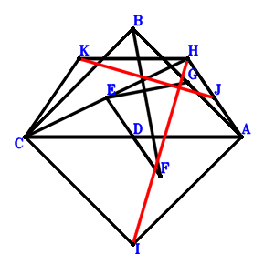
\(\because \) D is the midpoint of CA \(\therefore \small\overrightarrow{AD}=\dfrac{\small\overrightarrow{AC}}{2}\).\(\because \) E is the midpoint of CH \(\therefore \small\overrightarrow{AE}=\dfrac{\small\overrightarrow{AC}}{2} + \dfrac{\small\overrightarrow{AH}}{2}\).\(\because \) D is the midpoint of EF \(\therefore \small\overrightarrow{AF}=\small\overrightarrow{AC} - \small\overrightarrow{AE}=\dfrac{\small\overrightarrow{AC}}{2} - \dfrac{\small\overrightarrow{AH}}{2}\).\(\because \) G is the midpoint of BA \(\therefore \small\overrightarrow{AG}=\dfrac{\small\overrightarrow{AB}}{2}\).\(\because \) BCIA is a parallelogram \(\therefore \small\overrightarrow{AI}=- \small\overrightarrow{AB} + \small\overrightarrow{AC}\).\(\because \) J is the midpoint of HA \(\therefore \small\overrightarrow{AJ}=\dfrac{\small\overrightarrow{AH}}{2}\).\(\because \) CA//KH and CA=2KH \(\therefore \small\overrightarrow{AK}=\dfrac{\small\overrightarrow{AC}}{2} + \small\overrightarrow{AH}\).\(\because \) CB⊥BA \(\therefore \small\overrightarrow{AB} \cdot \small\overrightarrow{CB}=\small\overrightarrow{AB} \cdot \left(\small\overrightarrow{AB} - \small\overrightarrow{AC}\right)=\small\overrightarrow{AB}^{2} - \small\overrightarrow{AB} \cdot \small\overrightarrow{AC}=0\) . . . . . . \(①\)\(\because \) BF⊥EG \(\therefore \small\overrightarrow{FB} \cdot \small\overrightarrow{GE}=\left(\small\overrightarrow{AB} - \small\overrightarrow{AF}\right) \cdot \left(\small\overrightarrow{AE} - \small\overrightarrow{AG}\right)=\left(- \dfrac{\small\overrightarrow{AB}}{2} + \dfrac{\small\overrightarrow{AC}}{2} + \dfrac{\small\overrightarrow{AH}}{2}\right) \cdot \left(\small\overrightarrow{AB} - \dfrac{\small\overrightarrow{AC}}{2} + \dfrac{\small\overrightarrow{AH}}{2}\right)=- \dfrac{\small\overrightarrow{AB}^{2}}{2} + \dfrac{3 \small\overrightarrow{AB} \cdot \small\overrightarrow{AC}}{4} + \dfrac{\small\overrightarrow{AB} \cdot \small\overrightarrow{AH}}{4} - \dfrac{\small\overrightarrow{AC}^{2}}{4} + \dfrac{\small\overrightarrow{AH}^{2}}{4}=0\) . . . . . . \(②\)In conclusion, \(\small\overrightarrow{HI} \cdot \small\overrightarrow{JK}=\left(- \small\overrightarrow{AH} + \small\overrightarrow{AI}\right) \cdot \left(- \small\overrightarrow{AJ} + \small\overrightarrow{AK}\right)=\left(\dfrac{\small\overrightarrow{AC}}{2} + \dfrac{\small\overrightarrow{AH}}{2}\right) \cdot \left(- \small\overrightarrow{AB} + \small\overrightarrow{AC} - \small\overrightarrow{AH}\right)=- \dfrac{\small\overrightarrow{AB} \cdot \small\overrightarrow{AC}}{2} - \dfrac{\small\overrightarrow{AB} \cdot \small\overrightarrow{AH}}{2} + \dfrac{\small\overrightarrow{AC}^{2}}{2} - \dfrac{\small\overrightarrow{AH}^{2}}{2}=-①-2\cdot②=0\), that is, IH⊥KJ.
Exercise 26636： Let CBAD and CAEH be parallelograms. CBIA is a rectangle. GBAH is a trapezoid with GH//BA and GH=2BA. F is the midpoint of AE. DH⊥HF. Prove that GC⊥HI.
Exercise 26776： Let GCAH, HCBF, ECAD and ICBJ be parallelograms. H, I are the midpoints of AD, CH, respectively. EH⊥AF. Given that C, B, A are collinear and BG//AJ, prove that \(AJ·BG=BA·CB\).
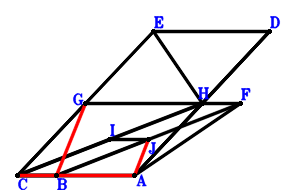
\(\because \) H is the midpoint of AD \(\therefore \small\overrightarrow{AD}=2 \small\overrightarrow{AH}\).\(\because \) ECAD is a parallelogram \(\therefore \small\overrightarrow{AE}=\small\overrightarrow{AC} + 2 \small\overrightarrow{AH}\).\(\because \) HCBF is a parallelogram \(\therefore \small\overrightarrow{AF}=\small\overrightarrow{AB} - \small\overrightarrow{AC} + \small\overrightarrow{AH}\).\(\because \) GCAH is a parallelogram \(\therefore \small\overrightarrow{AG}=\small\overrightarrow{AC} + \small\overrightarrow{AH}\).\(\because \) I is the midpoint of CH \(\therefore \small\overrightarrow{AI}=\dfrac{\small\overrightarrow{AC}}{2} + \dfrac{\small\overrightarrow{AH}}{2}\).\(\because \) ICBJ is a parallelogram \(\therefore \small\overrightarrow{AJ}=\small\overrightarrow{AB} - \dfrac{\small\overrightarrow{AC}}{2} + \dfrac{\small\overrightarrow{AH}}{2}\).\(\because \) EH⊥AF \( \therefore\small\overrightarrow{FA} \cdot \small\overrightarrow{HE}=- \small\overrightarrow{AF} \cdot \left(\small\overrightarrow{AE} - \small\overrightarrow{AH}\right)=- \left(\small\overrightarrow{AC} + \small\overrightarrow{AH}\right) \cdot \left(\small\overrightarrow{AB} - \small\overrightarrow{AC} + \small\overrightarrow{AH}\right)=- \small\overrightarrow{AB} \cdot \small\overrightarrow{AC} - \small\overrightarrow{AB} \cdot \small\overrightarrow{AH} + \small\overrightarrow{AC}^{2} - \small\overrightarrow{AH}^{2}=0.\)In conclusion, \(\small\overrightarrow{AB} \cdot \small\overrightarrow{CB} + \small\overrightarrow{AJ} \cdot \small\overrightarrow{BG}=\small\overrightarrow{AB} \cdot \left(\small\overrightarrow{AB} - \small\overrightarrow{AC}\right) + \small\overrightarrow{AJ} \cdot \left(- \small\overrightarrow{AB} + \small\overrightarrow{AG}\right)=\small\overrightarrow{AB} \cdot \left(\small\overrightarrow{AB} - \small\overrightarrow{AC}\right) + \left(- \small\overrightarrow{AB} + \small\overrightarrow{AC} + \small\overrightarrow{AH}\right) \cdot \left(\small\overrightarrow{AB} - \dfrac{\small\overrightarrow{AC}}{2} + \dfrac{\small\overrightarrow{AH}}{2}\right)=\dfrac{\small\overrightarrow{AB} \cdot \small\overrightarrow{AC}}{2} + \dfrac{\small\overrightarrow{AB} \cdot \small\overrightarrow{AH}}{2} - \dfrac{\small\overrightarrow{AC}^{2}}{2} + \dfrac{\small\overrightarrow{AH}^{2}}{2}=0\)\(\because\) C, B, A are collinear and BG//AJ \(\therefore\) \(AJ·BG=BA·CB\).
Exercise 27632： Let BCFA, BCGH and ECAD be parallelograms. HCIA is a trapezoid with CH//IA and CH=2IA. H is the midpoint of DA. EH⊥HF and CB⊥BA. Prove that GA⊥BI.
Exercise 27651： Let BCIA be a rectangle. HCAF and BCDH be parallelograms. EBCH is a trapezoid with CH//BE and CH=2BE. H is the midpoint of GF. DA⊥AE. Prove that GA⊥IH.
Exercise 28523： Let ECFA, HCAJ and DCAH be parallelograms. E, K are the midpoints of CH, AJ, respectively. G is the midpoint of BI and CA. CB⊥BA and DB⊥BF. Prove that IH⊥HK.
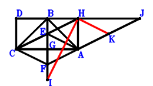
\(\because \) DCAH is a parallelogram \(\therefore \small\overrightarrow{AD}=\small\overrightarrow{AC} + \small\overrightarrow{AH}\).\(\because \) E is the midpoint of CH \(\therefore \small\overrightarrow{AE}=\dfrac{\small\overrightarrow{AC}}{2} + \dfrac{\small\overrightarrow{AH}}{2}\).\(\because \) ECFA is a parallelogram \(\therefore \small\overrightarrow{AF}=\small\overrightarrow{AC} - \small\overrightarrow{AE}=\dfrac{\small\overrightarrow{AC}}{2} - \dfrac{\small\overrightarrow{AH}}{2}\).\(\because \) G is the midpoint of CA \(\therefore \small\overrightarrow{AG}=\dfrac{\small\overrightarrow{AC}}{2}\).\(\because \) G is the midpoint of BI \(\therefore \small\overrightarrow{AI}=- \small\overrightarrow{AB} + 2 \small\overrightarrow{AG}=- \small\overrightarrow{AB} + \small\overrightarrow{AC}\).\(\because \) HCAJ is a parallelogram \(\therefore \small\overrightarrow{AJ}=- \small\overrightarrow{AC} + \small\overrightarrow{AH}\).\(\because \) K is the midpoint of AJ \(\therefore \small\overrightarrow{AK}=\dfrac{\small\overrightarrow{AJ}}{2}=- \dfrac{\small\overrightarrow{AC}}{2} + \dfrac{\small\overrightarrow{AH}}{2}\).\(\because \) DB⊥BF \(\therefore \small\overrightarrow{BD} \cdot \small\overrightarrow{FB}=\left(- \small\overrightarrow{AB} + \small\overrightarrow{AD}\right) \cdot \left(\small\overrightarrow{AB} - \small\overrightarrow{AF}\right)=\left(- \small\overrightarrow{AB} + \small\overrightarrow{AC} + \small\overrightarrow{AH}\right) \cdot \left(\small\overrightarrow{AB} - \dfrac{\small\overrightarrow{AC}}{2} + \dfrac{\small\overrightarrow{AH}}{2}\right)=- \small\overrightarrow{AB}^{2} + \dfrac{3 \small\overrightarrow{AB} \cdot \small\overrightarrow{AC}}{2} + \dfrac{\small\overrightarrow{AB} \cdot \small\overrightarrow{AH}}{2} - \dfrac{\small\overrightarrow{AC}^{2}}{2} + \dfrac{\small\overrightarrow{AH}^{2}}{2}=0\) . . . . . . \(①\)\(\because \) CB⊥BA \(\therefore \small\overrightarrow{AB} \cdot \small\overrightarrow{CB}=\small\overrightarrow{AB} \cdot \left(\small\overrightarrow{AB} - \small\overrightarrow{AC}\right)=\small\overrightarrow{AB}^{2} - \small\overrightarrow{AB} \cdot \small\overrightarrow{AC}=0\) . . . . . . \(②\)In conclusion, \(\small\overrightarrow{HI} \cdot \small\overrightarrow{KH}=\left(- \small\overrightarrow{AH} + \small\overrightarrow{AI}\right) \cdot \left(\small\overrightarrow{AH} - \small\overrightarrow{AK}\right)=\left(\dfrac{\small\overrightarrow{AC}}{2} + \dfrac{\small\overrightarrow{AH}}{2}\right) \cdot \left(- \small\overrightarrow{AB} + \small\overrightarrow{AC} - \small\overrightarrow{AH}\right)=- \dfrac{\small\overrightarrow{AB} \cdot \small\overrightarrow{AC}}{2} - \dfrac{\small\overrightarrow{AB} \cdot \small\overrightarrow{AH}}{2} + \dfrac{\small\overrightarrow{AC}^{2}}{2} - \dfrac{\small\overrightarrow{AH}^{2}}{2}=-①-②=0\), that is, IH⊥HK.
Exercise 29080： Let FBCH and ECAH be parallelograms. DCAH is a trapezoid with CA//DH and CA=2DH. J, D, G, I are the midpoints of IB, EH, CA, CH, respectively. EA⊥AF and CB⊥BA. Prove that EB⊥JG.
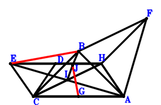
\(\because \) CA//DH and CA=2DH \(\therefore \small\overrightarrow{AD}=\dfrac{\small\overrightarrow{AC}}{2} + \small\overrightarrow{AH}\).\(\because \) D is the midpoint of EH \(\therefore \small\overrightarrow{AE}=2 \small\overrightarrow{AD} - \small\overrightarrow{AH}=\small\overrightarrow{AC} + \small\overrightarrow{AH}\).\(\because \) FBCH is a parallelogram \(\therefore \small\overrightarrow{AF}=\small\overrightarrow{AB} - \small\overrightarrow{AC} + \small\overrightarrow{AH}\).\(\because \) ECAH is a parallelogram \(\therefore \small\overrightarrow{AG}=\dfrac{\small\overrightarrow{AC}}{2}\).\(\because \) G is the midpoint of CA \(\therefore \small\overrightarrow{AI}=\dfrac{\small\overrightarrow{AC}}{2} + \dfrac{\small\overrightarrow{AH}}{2}\).\(\because \) I is the midpoint of CH \(\therefore \small\overrightarrow{AJ}=\dfrac{\small\overrightarrow{AB}}{2} + \dfrac{\small\overrightarrow{AI}}{2}=\dfrac{\small\overrightarrow{AB}}{2} + \dfrac{\small\overrightarrow{AC}}{4} + \dfrac{\small\overrightarrow{AH}}{4}\).\(\because \) J is the midpoint of IB \(\therefore \small\overrightarrow{AB} \cdot \small\overrightarrow{CB}=\small\overrightarrow{AB} \cdot \left(\small\overrightarrow{AB} - \small\overrightarrow{AC}\right)=\small\overrightarrow{AB}^{2} - \small\overrightarrow{AB} \cdot \small\overrightarrow{AC}=0\) . . . . . . \(①\)\(\because \) CB⊥BA \(\therefore - \small\overrightarrow{AE} \cdot \small\overrightarrow{AF}=- \left(\small\overrightarrow{AC} + \small\overrightarrow{AH}\right) \cdot \left(\small\overrightarrow{AB} - \small\overrightarrow{AC} + \small\overrightarrow{AH}\right)=- \small\overrightarrow{AB} \cdot \small\overrightarrow{AC} - \small\overrightarrow{AB} \cdot \small\overrightarrow{AH} + \small\overrightarrow{AC}^{2} - \small\overrightarrow{AH}^{2}=0\) . . . . . . \(②\)In conclusion, \(\small\overrightarrow{BE} \cdot \small\overrightarrow{GJ}=\left(- \small\overrightarrow{AB} + \small\overrightarrow{AE}\right) \cdot \left(- \small\overrightarrow{AG} + \small\overrightarrow{AJ}\right)=\left(- \small\overrightarrow{AB} + \small\overrightarrow{AC} + \small\overrightarrow{AH}\right) \cdot \left(\dfrac{\small\overrightarrow{AB}}{2} - \dfrac{\small\overrightarrow{AC}}{4} + \dfrac{\small\overrightarrow{AH}}{4}\right)=- \dfrac{\small\overrightarrow{AB}^{2}}{2} + \dfrac{3 \small\overrightarrow{AB} \cdot \small\overrightarrow{AC}}{4} + \dfrac{\small\overrightarrow{AB} \cdot \small\overrightarrow{AH}}{4} - \dfrac{\small\overrightarrow{AC}^{2}}{4} + \dfrac{\small\overrightarrow{AH}^{2}}{4}=-1/2\cdot①-1/4\cdot②=0\), that is, EB⊥JG.
Exercise 29235： Let AECD and HAIC be parallelograms. HACG is a trapezoid with CG//AH and CG=2AH. F, D are the midpoints of AB, HC, respectively. EB⊥FD and AB⊥BC. Prove that HG⊥IB.
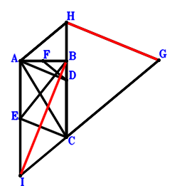
\(\because \) D is the midpoint of HC \(\therefore \small\overrightarrow{CD}=\dfrac{\small\overrightarrow{CH}}{2}\).\(\because \) AECD is a parallelogram \(\therefore \small\overrightarrow{CE}=\small\overrightarrow{CA} - \small\overrightarrow{CD}=\small\overrightarrow{CA} - \dfrac{\small\overrightarrow{CH}}{2}\).\(\because \) F is the midpoint of AB \(\therefore \small\overrightarrow{CF}=\dfrac{\small\overrightarrow{CA}}{2} + \dfrac{\small\overrightarrow{CB}}{2}\).\(\because \) CG//AH and CG=2AH \(\therefore \small\overrightarrow{CG}=- 2 \small\overrightarrow{CA} + 2 \small\overrightarrow{CH}\).\(\because \) HAIC is a parallelogram \(\therefore \small\overrightarrow{CI}=\small\overrightarrow{CA} - \small\overrightarrow{CH}\).\(\because \) AB⊥BC \(\therefore \small\overrightarrow{AB} \cdot \small\overrightarrow{CB}=\small\overrightarrow{CB} \cdot \left(- \small\overrightarrow{CA} + \small\overrightarrow{CB}\right)=- \small\overrightarrow{CA} \cdot \small\overrightarrow{CB} + \small\overrightarrow{CB}^{2}=0\) . . . . . . \(①\)\(\because \) EB⊥FD \(\therefore \small\overrightarrow{EB} \cdot \small\overrightarrow{FD}=\left(\small\overrightarrow{CB} - \small\overrightarrow{CE}\right) \cdot \left(\small\overrightarrow{CD} - \small\overrightarrow{CF}\right)=\left(- \small\overrightarrow{CA} + \small\overrightarrow{CB} + \dfrac{\small\overrightarrow{CH}}{2}\right) \cdot \left(- \dfrac{\small\overrightarrow{CA}}{2} - \dfrac{\small\overrightarrow{CB}}{2} + \dfrac{\small\overrightarrow{CH}}{2}\right)=\dfrac{\small\overrightarrow{CA}^{2}}{2} - \dfrac{3 \small\overrightarrow{CA} \cdot \small\overrightarrow{CH}}{4} - \dfrac{\small\overrightarrow{CB}^{2}}{2} + \dfrac{\small\overrightarrow{CB} \cdot \small\overrightarrow{CH}}{4} + \dfrac{\small\overrightarrow{CH}^{2}}{4}=0\) . . . . . . \(②\)In conclusion, \(\small\overrightarrow{BI} \cdot \small\overrightarrow{HG}=\left(- \small\overrightarrow{CB} + \small\overrightarrow{CI}\right) \cdot \left(\small\overrightarrow{CG} - \small\overrightarrow{CH}\right)=\left(- 2 \small\overrightarrow{CA} + \small\overrightarrow{CH}\right) \cdot \left(\small\overrightarrow{CA} - \small\overrightarrow{CB} - \small\overrightarrow{CH}\right)=- 2 \small\overrightarrow{CA}^{2} + 2 \small\overrightarrow{CA} \cdot \small\overrightarrow{CB} + 3 \small\overrightarrow{CA} \cdot \small\overrightarrow{CH} - \small\overrightarrow{CB} \cdot \small\overrightarrow{CH} - \small\overrightarrow{CH}^{2}=-2\cdot①-4\cdot②=0\), that is, HG⊥IB.